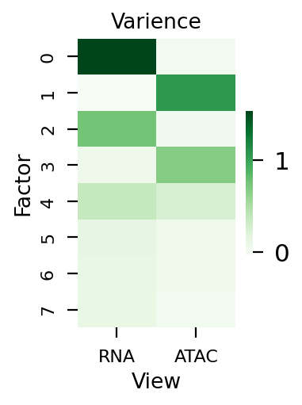
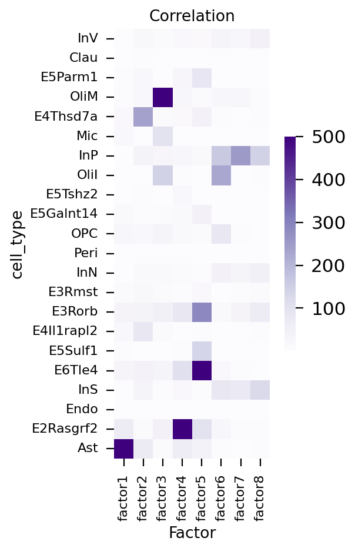
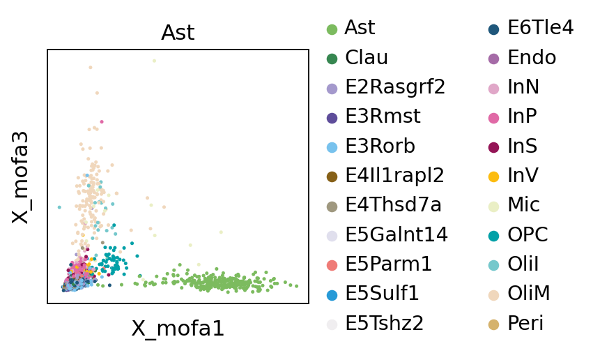
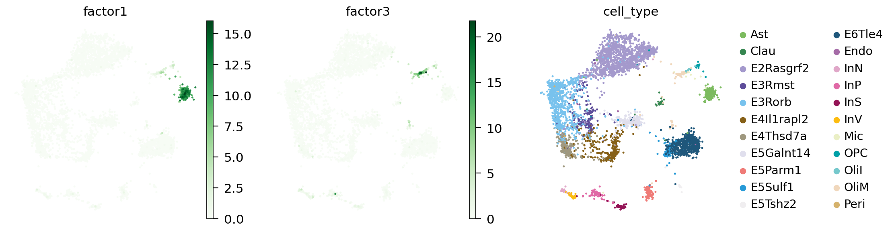
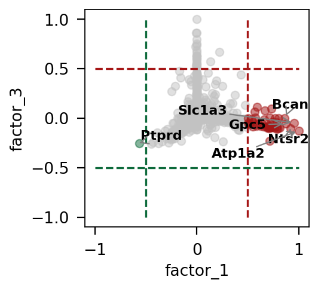
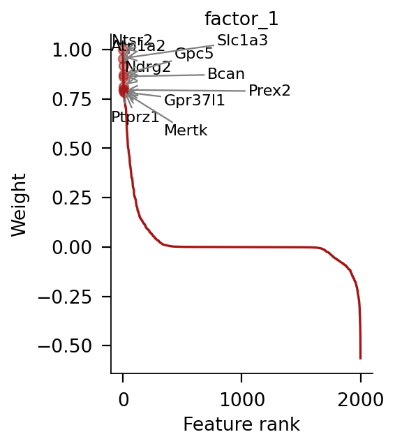
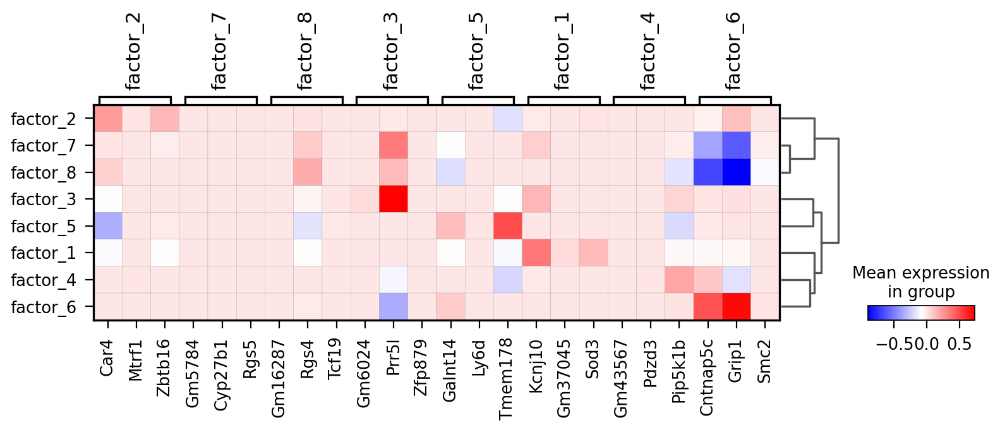

<!DOCTYPE html>


<html lang="en" data-content_root="../" >

  <head>
    <meta charset="utf-8" />
    <meta name="viewport" content="width=device-width, initial-scale=1.0" /><meta name="viewport" content="width=device-width, initial-scale=1" />
<meta property="og:title" content="Multi omics analysis by MOFA and GLUE" />
<meta property="og:type" content="website" />
<meta property="og:url" content="Tutorials-single/t_mofa_glue.html" />
<meta property="og:site_name" content="omicverse" />
<meta property="og:description" content="MOFA is a factor analysis model that provides a general framework for the integration of multi-omic data sets in an unsupervised fashion. Most of the time, however, we did not get paired cells in t..." />
<meta property="og:image:width" content="1146" />
<meta property="og:image:height" content="600" />
<meta property="og:image" content="_images/social_previews/summary_Tutorials-single_t_mofa_glue_76291b41.png" />
<meta property="og:image:alt" content="MOFA is a factor analysis model that provides a general framework for the integration of multi-omic data sets in an unsupervised fashion. Most of the time, however, we did not get paired cells in t..." />
<meta name="description" content="MOFA is a factor analysis model that provides a general framework for the integration of multi-omic data sets in an unsupervised fashion. Most of the time, however, we did not get paired cells in t..." />
<meta name="twitter:card" content="summary_large_image" />

    <title>Multi omics analysis by MOFA and GLUE &#8212; omicverse</title>
  
  
  
  <script data-cfasync="false">
    document.documentElement.dataset.mode = localStorage.getItem("mode") || "";
    document.documentElement.dataset.theme = localStorage.getItem("theme") || "";
  </script>
  
  <!-- Loaded before other Sphinx assets -->
  <link href="../_static/styles/theme.css?digest=dfe6caa3a7d634c4db9b" rel="stylesheet" />
<link href="../_static/styles/bootstrap.css?digest=dfe6caa3a7d634c4db9b" rel="stylesheet" />
<link href="../_static/styles/pydata-sphinx-theme.css?digest=dfe6caa3a7d634c4db9b" rel="stylesheet" />

  
  <link href="../_static/vendor/fontawesome/6.5.2/css/all.min.css?digest=dfe6caa3a7d634c4db9b" rel="stylesheet" />
  <link rel="preload" as="font" type="font/woff2" crossorigin href="../_static/vendor/fontawesome/6.5.2/webfonts/fa-solid-900.woff2" />
<link rel="preload" as="font" type="font/woff2" crossorigin href="../_static/vendor/fontawesome/6.5.2/webfonts/fa-brands-400.woff2" />
<link rel="preload" as="font" type="font/woff2" crossorigin href="../_static/vendor/fontawesome/6.5.2/webfonts/fa-regular-400.woff2" />

    <link rel="stylesheet" type="text/css" href="../_static/pygments.css?v=8f2a1f02" />
    <link rel="stylesheet" type="text/css" href="../_static/styles/sphinx-book-theme.css?v=eba8b062" />
    <link rel="stylesheet" type="text/css" href="../_static/mystnb.4510f1fc1dee50b3e5859aac5469c37c29e427902b24a333a5f9fcb2f0b3ac41.css" />
    <link rel="stylesheet" type="text/css" href="../_static/copybutton.css?v=76b2166b" />
    <link rel="stylesheet" type="text/css" href="../_static/css/tooltipster.custom.css" />
    <link rel="stylesheet" type="text/css" href="../_static/css/tooltipster.bundle.min.css" />
    <link rel="stylesheet" type="text/css" href="../_static/css/tooltipster-sideTip-shadow.min.css" />
    <link rel="stylesheet" type="text/css" href="../_static/css/tooltipster-sideTip-punk.min.css" />
    <link rel="stylesheet" type="text/css" href="../_static/css/tooltipster-sideTip-noir.min.css" />
    <link rel="stylesheet" type="text/css" href="../_static/css/tooltipster-sideTip-light.min.css" />
    <link rel="stylesheet" type="text/css" href="../_static/css/tooltipster-sideTip-borderless.min.css" />
    <link rel="stylesheet" type="text/css" href="../_static/css/micromodal.css" />
    <link rel="stylesheet" type="text/css" href="../_static/sphinx-design.min.css?v=95c83b7e" />
    <link rel="stylesheet" type="text/css" href="https://cdnjs.cloudflare.com/ajax/libs/font-awesome/6.0.0/css/all.min.css" />
    <link rel="stylesheet" type="text/css" href="../_static/css/custom.css?v=3a64e6d4" />
    <link rel="stylesheet" type="text/css" href="../_static/css/icons.css?v=b452f90d" />
    <link rel="stylesheet" type="text/css" href="../_static/css/override.css?v=216aaec1" />
  
  <!-- Pre-loaded scripts that we'll load fully later -->
  <link rel="preload" as="script" href="../_static/scripts/bootstrap.js?digest=dfe6caa3a7d634c4db9b" />
<link rel="preload" as="script" href="../_static/scripts/pydata-sphinx-theme.js?digest=dfe6caa3a7d634c4db9b" />
  <script src="../_static/vendor/fontawesome/6.5.2/js/all.min.js?digest=dfe6caa3a7d634c4db9b"></script>

    <script src="../_static/jquery.js?v=5d32c60e"></script>
    <script src="../_static/_sphinx_javascript_frameworks_compat.js?v=2cd50e6c"></script>
    <script src="../_static/documentation_options.js?v=f9413015"></script>
    <script src="../_static/doctools.js?v=9a2dae69"></script>
    <script src="../_static/sphinx_highlight.js?v=dc90522c"></script>
    <script src="../_static/clipboard.min.js?v=a7894cd8"></script>
    <script src="../_static/copybutton.js?v=f281be69"></script>
    <script src="../_static/js/hoverxref.js"></script>
    <script src="../_static/js/tooltipster.bundle.min.js"></script>
    <script src="../_static/js/micromodal.min.js"></script>
    <script src="../_static/scripts/sphinx-book-theme.js?v=887ef09a"></script>
    <script src="../_static/design-tabs.js?v=f930bc37"></script>
    <script>window.MathJax = {"options": {"processHtmlClass": "tex2jax_process|mathjax_process|math|output_area"}}</script>
    <script defer="defer" src="https://cdn.jsdelivr.net/npm/mathjax@3/es5/tex-mml-chtml.js"></script>
    <script>DOCUMENTATION_OPTIONS.pagename = 'Tutorials-single/t_mofa_glue';</script>
    <link rel="icon" href="../_static/favicon.ico"/>
    <link rel="index" title="Index" href="../genindex.html" />
    <link rel="search" title="Search" href="../search.html" />
    <link rel="next" title="Celltype annotation transfer in multi-omics" href="t_anno_trans.html" />
    <link rel="prev" title="Multi omics analysis by MOFA" href="t_mofa.html" />
  <meta name="viewport" content="width=device-width, initial-scale=1"/>
  <meta name="docsearch:language" content="en"/>
  </head>
  
  
  <body data-bs-spy="scroll" data-bs-target=".bd-toc-nav" data-offset="180" data-bs-root-margin="0px 0px -60%" data-default-mode="">

  
  
  <div id="pst-skip-link" class="skip-link d-print-none"><a href="#main-content">Skip to main content</a></div>
  
  <div id="pst-scroll-pixel-helper"></div>
  
  <button type="button" class="btn rounded-pill" id="pst-back-to-top">
    <i class="fa-solid fa-arrow-up"></i>Back to top</button>

  
  <input type="checkbox"
          class="sidebar-toggle"
          id="pst-primary-sidebar-checkbox"/>
  <label class="overlay overlay-primary" for="pst-primary-sidebar-checkbox"></label>
  
  <input type="checkbox"
          class="sidebar-toggle"
          id="pst-secondary-sidebar-checkbox"/>
  <label class="overlay overlay-secondary" for="pst-secondary-sidebar-checkbox"></label>
  
  <div class="search-button__wrapper">
    <div class="search-button__overlay"></div>
    <div class="search-button__search-container">
<form class="bd-search d-flex align-items-center"
      action="../search.html"
      method="get">
  <i class="fa-solid fa-magnifying-glass"></i>
  <input type="search"
         class="form-control"
         name="q"
         id="search-input"
         placeholder="Search..."
         aria-label="Search..."
         autocomplete="off"
         autocorrect="off"
         autocapitalize="off"
         spellcheck="false"/>
  <span class="search-button__kbd-shortcut"><kbd class="kbd-shortcut__modifier">Ctrl</kbd>+<kbd>K</kbd></span>
</form></div>
  </div>

  <div class="pst-async-banner-revealer d-none">
  <aside id="bd-header-version-warning" class="d-none d-print-none" aria-label="Version warning"></aside>
</div>

  
    <header class="bd-header navbar navbar-expand-lg bd-navbar d-print-none">
    </header>
  

  <div class="bd-container">
    <div class="bd-container__inner bd-page-width">
      
      
      
      <div class="bd-sidebar-primary bd-sidebar">
        

  
  <div class="sidebar-header-items sidebar-primary__section">
    
    
    
    
  </div>
  
    <div class="sidebar-primary-items__start sidebar-primary__section">
        <div class="sidebar-primary-item">

  
    
  

<a class="navbar-brand logo" href="../index.html">
  
  
  
  
  
    
    
      
    
    
    
    <script>document.write(``);</script>
  
  
</a></div>
        <div class="sidebar-primary-item">

 <script>
 document.write(`
   <button class="btn search-button-field search-button__button" title="Search" aria-label="Search" data-bs-placement="bottom" data-bs-toggle="tooltip">
    <i class="fa-solid fa-magnifying-glass"></i>
    <span class="search-button__default-text">Search</span>
    <span class="search-button__kbd-shortcut"><kbd class="kbd-shortcut__modifier">Ctrl</kbd>+<kbd class="kbd-shortcut__modifier">K</kbd></span>
   </button>
 `);
 </script></div>
        <div class="sidebar-primary-item"><nav class="bd-links bd-docs-nav" aria-label="Main">
    <div class="bd-toc-item navbar-nav active">
        
        <ul class="nav bd-sidenav bd-sidenav__home-link">
            <li class="toctree-l1">
                <a class="reference internal" href="../index.html">
                    OmicVerse Documentation
                </a>
            </li>
        </ul>
        <ul class="current nav bd-sidenav">
<li class="toctree-l1"><a class="reference internal" href="../Installation_guild.html">OmicVerse Installation Guide</a></li>
<li class="toctree-l1 current active has-children"><a class="reference internal" href="../tutorials/index.html">Tutorials</a><details open="open"><summary><span class="toctree-toggle" role="presentation"><i class="fa-solid fa-chevron-down"></i></span></summary><ul class="current">
<li class="toctree-l2 has-children"><a class="reference internal" href="../tutorials/index_bulk.html">Bulk RNA-seq</a><details><summary><span class="toctree-toggle" role="presentation"><i class="fa-solid fa-chevron-down"></i></span></summary><ul>
<li class="toctree-l3 has-children"><a class="reference internal" href="../tutorials/index_bulk_upstream.html">Upstream</a><details><summary><span class="toctree-toggle" role="presentation"><i class="fa-solid fa-chevron-down"></i></span></summary><ul>
<li class="toctree-l4"><a class="reference internal" href="../Tutorials-bulk/t_mapping_STAR.html">Bulk RNA-seq mapping with STAR</a></li>
<li class="toctree-l4"><a class="reference internal" href="../Tutorials-bulk/t_mapping_kbpython.html">Bulk RNA-seq mapping with kb-python</a></li>
</ul>
</details></li>
<li class="toctree-l3 has-children"><a class="reference internal" href="../tutorials/index_bulk_preprocessing.html">Preprocessing</a><details><summary><span class="toctree-toggle" role="presentation"><i class="fa-solid fa-chevron-down"></i></span></summary><ul>
<li class="toctree-l4"><a class="reference internal" href="../Tutorials-bulk/t_bulk_combat.html">Batch correction in Bulk RNA-seq or microarray data</a></li>
</ul>
</details></li>
<li class="toctree-l3 has-children"><a class="reference internal" href="../tutorials/index_bulk_downstream.html">Downstream</a><details><summary><span class="toctree-toggle" role="presentation"><i class="fa-solid fa-chevron-down"></i></span></summary><ul>
<li class="toctree-l4"><a class="reference internal" href="../Tutorials-bulk/t_deg.html">Different Expression Analysis</a></li>
<li class="toctree-l4"><a class="reference internal" href="../Tutorials-bulk/t_deseq2.html">Different Expression Analysis with DEseq2</a></li>
<li class="toctree-l4"><a class="reference internal" href="../Tutorials-bulk/t_network.html">Protein-Protein interaction (PPI) analysis by String-db</a></li>
<li class="toctree-l4"><a class="reference internal" href="../Tutorials-bulk/t_wgcna.html">WGCNA (Weighted gene co-expression network analysis) analysis</a></li>
</ul>
</details></li>
<li class="toctree-l3 has-children"><a class="reference internal" href="../tutorials/index_bulk_deconvolution.html">Deconvolution</a><details><summary><span class="toctree-toggle" role="presentation"><i class="fa-solid fa-chevron-down"></i></span></summary><ul>
<li class="toctree-l4"><a class="reference internal" href="../Tutorials-bulk/t_decov_bulk.html">Bulk deconvolution with reference scRNA-seq</a></li>
</ul>
</details></li>
<li class="toctree-l3 has-children"><a class="reference internal" href="../tutorials/index_bulk_others.html">Others</a><details><summary><span class="toctree-toggle" role="presentation"><i class="fa-solid fa-chevron-down"></i></span></summary><ul>
<li class="toctree-l4"><a class="reference internal" href="../Tutorials-bulk/t_tcga.html">TCGA database preprocess</a></li>
</ul>
</details></li>
</ul>
</details></li>
<li class="toctree-l2 has-children"><a class="reference internal" href="../tutorials/index_metabol.html">Metabolomics</a><details><summary><span class="toctree-toggle" role="presentation"><i class="fa-solid fa-chevron-down"></i></span></summary><ul>
<li class="toctree-l3"><a class="reference internal" href="../Tutorials-metabol/t_metabol_01_intro.html">Metabolomics preprocessing and univariate statistics</a></li>
<li class="toctree-l3"><a class="reference internal" href="../Tutorials-metabol/t_metabol_02_multivariate.html">Multivariate discrimination with PLS-DA and OPLS-DA</a></li>
<li class="toctree-l3"><a class="reference internal" href="../Tutorials-metabol/t_metabol_03_pathway.html">Metabolite-set enrichment analysis (MSEA)</a></li>
<li class="toctree-l3"><a class="reference internal" href="../Tutorials-metabol/t_metabol_04_untargeted.html">Untargeted LC-MS and mummichog pathway inference</a></li>
<li class="toctree-l3"><a class="reference internal" href="../Tutorials-metabol/t_metabol_05_lipidomics.html">Lipidomics with LIPID MAPS and LION</a></li>
<li class="toctree-l3"><a class="reference internal" href="../Tutorials-metabol/t_metabol_06_batch_correction.html">Batch effect and drift correction for LC-MS</a></li>
<li class="toctree-l3"><a class="reference internal" href="../Tutorials-metabol/t_metabol_07_multifactor.html">Multi-factor designs — ASCA and linear mixed models</a></li>
<li class="toctree-l3"><a class="reference internal" href="../Tutorials-metabol/t_metabol_08_biomarker.html">Biomarker discovery — univariate AUC + multivariate panel</a></li>
<li class="toctree-l3"><a class="reference internal" href="../Tutorials-metabol/t_metabol_09_dgca.html">Differential correlation — DGCA</a></li>
<li class="toctree-l3"><a class="reference internal" href="../Tutorials-metabol/t_metabol_10_multiomics.html">Multi-omics integration — metabolomics + RNA-seq with MOFA</a></li>
</ul>
</details></li>
<li class="toctree-l2 has-children"><a class="reference internal" href="../tutorials/index_microbiome.html">Microbiome</a><details><summary><span class="toctree-toggle" role="presentation"><i class="fa-solid fa-chevron-down"></i></span></summary><ul>
<li class="toctree-l3"><a class="reference internal" href="../Tutorials-microbiome/t_16s_amplicon.html">16S rRNA amplicon analysis with OmicVerse</a></li>
<li class="toctree-l3"><a class="reference internal" href="../Tutorials-microbiome/t_16s_phylogeny.html">16S phylogeny: MAFFT → FastTree → Faith PD + UniFrac</a></li>
<li class="toctree-l3"><a class="reference internal" href="../Tutorials-microbiome/t_16s_dada2.html">DADA2 backend: pure-Python ASV inference</a></li>
<li class="toctree-l3"><a class="reference internal" href="../Tutorials-microbiome/t_16s_da_comparison.html">Differential abundance: Wilcoxon vs DESeq2 vs ANCOM-BC</a></li>
</ul>
</details></li>
<li class="toctree-l2 current active has-children"><a class="reference internal" href="../tutorials/index_single.html">Single-Cell RNA-seq</a><details open="open"><summary><span class="toctree-toggle" role="presentation"><i class="fa-solid fa-chevron-down"></i></span></summary><ul class="current">
<li class="toctree-l3 has-children"><a class="reference internal" href="../tutorials/index_single_alignment.html">Alignment</a><details><summary><span class="toctree-toggle" role="presentation"><i class="fa-solid fa-chevron-down"></i></span></summary><ul>
<li class="toctree-l4"><a class="reference internal" href="t_alignment_1k.html">Alignment and analysis of single-cell RNA-seq data</a></li>
<li class="toctree-l4"><a class="reference internal" href="t_alignment_velocity.html">Alignment and RNA velocity analysis of single-cell RNA-seq data.</a></li>
</ul>
</details></li>
<li class="toctree-l3 has-children"><a class="reference internal" href="../tutorials/index_single_preprocessing.html">Preprocessing</a><details><summary><span class="toctree-toggle" role="presentation"><i class="fa-solid fa-chevron-down"></i></span></summary><ul>
<li class="toctree-l4"><a class="reference internal" href="t_preprocess_cpu.html">Preprocessing the data of scRNA-seq with omicverse[CPU-GPU-mixed]</a></li>
<li class="toctree-l4"><a class="reference internal" href="t_preprocess_gpu.html">Preprocessing the data of scRNA-seq with omicverse[GPU]</a></li>
<li class="toctree-l4"><a class="reference internal" href="t_preprocess_rust.html">Preprocessing the data of scRNA-seq [Rust / out-of-memory]</a></li>
<li class="toctree-l4"><a class="reference internal" href="t_cluster.html">Clustering space</a></li>
<li class="toctree-l4"><a class="reference internal" href="t_single_batch.html">Data integration and batch correction</a></li>
<li class="toctree-l4"><a class="reference internal" href="t_cnmf.html">GeneModule Identified</a></li>
<li class="toctree-l4"><a class="reference internal" href="t_lazy.html">Lazy analysis of scRNA-seq</a></li>
</ul>
</details></li>
<li class="toctree-l3 has-children"><a class="reference internal" href="../tutorials/index_single_annotation.html">Annotation</a><details><summary><span class="toctree-toggle" role="presentation"><i class="fa-solid fa-chevron-down"></i></span></summary><ul>
<li class="toctree-l4"><a class="reference internal" href="t_anno_noref.html">Reference-free automated single-cell cell type annotation</a></li>
<li class="toctree-l4"><a class="reference internal" href="t_anno_ref.html">Reference automated single-cell cell type annotation</a></li>
<li class="toctree-l4"><a class="reference internal" href="t_gptanno.html">Automatic cell type annotation with GPT/Other</a></li>
<li class="toctree-l4"><a class="reference internal" href="t_cellmatch.html">Mapping Cell Names to the Cell Ontology/Taxonomy</a></li>
<li class="toctree-l4"><a class="reference internal" href="t_cellanno.html">Celltype auto annotation with SCSA</a></li>
<li class="toctree-l4"><a class="reference internal" href="t_metatime.html">Celltype auto annotation with MetaTiME</a></li>
<li class="toctree-l4"><a class="reference internal" href="t_tosica.html">Celltype annotation migration(mapping) with TOSICA</a></li>
<li class="toctree-l4"><a class="reference internal" href="t_scmulan.html">Using scMulan to annotate cell types in Heart, Lung, Liver, Bone marrow, Blood, Brain, and Thymus</a></li>


<li class="toctree-l4"><a class="reference internal" href="t_cellvote.html">Consensus annotation with CellVote</a></li>
</ul>
</details></li>
<li class="toctree-l3 has-children"><a class="reference internal" href="../tutorials/index_single_trajectory.html">Trajectory</a><details><summary><span class="toctree-toggle" role="presentation"><i class="fa-solid fa-chevron-down"></i></span></summary><ul>
<li class="toctree-l4"><a class="reference internal" href="t_cytotrace.html">Prediction of absolute developmental potential using CytoTrace2</a></li>
<li class="toctree-l4"><a class="reference internal" href="t_traj.html">Basic Trajectory Inference</a></li>
<li class="toctree-l4"><a class="reference internal" href="t_stavia.html">Trajectory Inference with StaVIA</a></li>
<li class="toctree-l4"><a class="reference internal" href="t_cellfate_gene.html">Timing-associated genes analysis with TimeFateKernel</a></li>
<li class="toctree-l4"><a class="reference internal" href="t_cellfate.html">Identify the driver regulators of cell fate decisions</a></li>


</ul>
</details></li>
<li class="toctree-l3 has-children"><a class="reference internal" href="../tutorials/index_single_cell_structure.html">Cell Structure</a><details><summary><span class="toctree-toggle" role="presentation"><i class="fa-solid fa-chevron-down"></i></span></summary><ul>
<li class="toctree-l4"><a class="reference internal" href="t_metacells.html">Inference of MetaCell from Single-Cell RNA-seq</a></li>
<li class="toctree-l4"><a class="reference internal" href="t_deg_single.html">Differential expression and celltype analysis [All Cell]</a></li>
<li class="toctree-l4"><a class="reference internal" href="t_scdeg.html">Differential expression analysis [Meta Cell]</a></li>
<li class="toctree-l4"><a class="reference internal" href="t_scenic.html">Gene Regulatory Network Analysis with SCENIC</a></li>
<li class="toctree-l4"><a class="reference internal" href="t_aucell.html">Pathway analysis with AUCell</a></li>
<li class="toctree-l4"><a class="reference internal" href="t_cellphonedb.html">Cell-cell communication with CellPhoneDB</a></li>

<li class="toctree-l4"><a class="reference internal" href="t_scdrug.html">Drug response predict with scDrug</a></li>
<li class="toctree-l4"><a class="reference internal" href="t_simba.html">Data integration and batch correction with SIMBA</a></li>
</ul>
</details></li>
<li class="toctree-l3 has-children"><a class="reference internal" href="../tutorials/index_single_velocity.html">Velocity</a><details><summary><span class="toctree-toggle" role="presentation"><i class="fa-solid fa-chevron-down"></i></span></summary><ul>
<li class="toctree-l4"><a class="reference internal" href="../Tutorials-velo/t_velo.html">Velocity Basic Calculation</a></li>
<li class="toctree-l4"><a class="reference internal" href="../Tutorials-velo/t_graphvelo.html">Velocity Optimization</a></li>
</ul>
</details></li>
<li class="toctree-l3 current active has-children"><a class="reference internal" href="../tutorials/index_single_multi_omics.html">Multi-omics</a><details open="open"><summary><span class="toctree-toggle" role="presentation"><i class="fa-solid fa-chevron-down"></i></span></summary><ul class="current">
<li class="toctree-l4"><a class="reference internal" href="t_mofa.html">Multi omics analysis by MOFA</a></li>
<li class="toctree-l4 current active"><a class="current reference internal" href="#">Multi omics analysis by MOFA and GLUE</a></li>
<li class="toctree-l4"><a class="reference internal" href="t_anno_trans.html">Celltype annotation transfer in multi-omics</a></li>
</ul>
</details></li>
</ul>
</details></li>
<li class="toctree-l2 has-children"><a class="reference internal" href="../tutorials/index_multi_omics.html">Multi-Omics</a><details><summary><span class="toctree-toggle" role="presentation"><i class="fa-solid fa-chevron-down"></i></span></summary><ul>
<li class="toctree-l3"><a class="reference internal" href="../Tutorials-Multi-Omics/bulk-single/t_bulktrajblend.html">Bulk RNA-seq generate ‘interrupted’ cells to interpolate scRNA-seq</a></li>
<li class="toctree-l3"><a class="reference internal" href="../Tutorials-Multi-Omics/bulk-single/t_bulk2single.html">Bulk RNA-seq to Single RNA-seq</a></li>
<li class="toctree-l3"><a class="reference internal" href="../Tutorials-Multi-Omics/bulk-single/t_single2spatial.html">Single RNA-seq to Spatial RNA-seq</a></li>
</ul>
</details></li>
<li class="toctree-l2 has-children"><a class="reference internal" href="../tutorials/index_spatial.html">Spatial Transcriptomics</a><details><summary><span class="toctree-toggle" role="presentation"><i class="fa-solid fa-chevron-down"></i></span></summary><ul>
<li class="toctree-l3 has-children"><a class="reference internal" href="../tutorials/index_spatial_preprocessing.html">Preprocessing</a><details><summary><span class="toctree-toggle" role="presentation"><i class="fa-solid fa-chevron-down"></i></span></summary><ul>
<li class="toctree-l4"><a class="reference internal" href="../Tutorials-space/t_crop_rotate.html">Crop and Rotation of spatial transcriptomic data</a></li>
<li class="toctree-l4"><a class="reference internal" href="../Tutorials-space/t_cellpose.html">Cell Segmemtation (10x HD)</a></li>
<li class="toctree-l4"><a class="reference internal" href="../Tutorials-space/t_nanostring_preprocess.html">Analyze NanoString data</a></li>
<li class="toctree-l4"><a class="reference internal" href="../Tutorials-space/t_xenium_preprocess.html">Analyze Xenium data</a></li>
<li class="toctree-l4"><a class="reference internal" href="../Tutorials-space/t_visium_hd_preprocess.html">Analyze Visium HD data</a></li>
<li class="toctree-l4"><a class="reference internal" href="../Tutorials-space/t_staligner.html">Spatial integration and clustering</a></li>


</ul>
</details></li>
<li class="toctree-l3 has-children"><a class="reference internal" href="../tutorials/index_spatial_clustering.html">Clustering</a><details><summary><span class="toctree-toggle" role="presentation"><i class="fa-solid fa-chevron-down"></i></span></summary><ul>
<li class="toctree-l4"><a class="reference internal" href="../Tutorials-space/cluster/t_cluster_graphst.html">Spatial clustering with GraphST + pymclustR</a></li>
<li class="toctree-l4"><a class="reference internal" href="../Tutorials-space/cluster/t_cluster_binary.html">Spatial clustering with BINARY + pymclustR</a></li>
<li class="toctree-l4"><a class="reference internal" href="../Tutorials-space/cluster/t_cluster_stagate.html">Spatial clustering with STAGATE + pymclustR</a></li>
<li class="toctree-l4"><a class="reference internal" href="../Tutorials-space/cluster/t_cluster_cast.html">Spatial clustering with CAST + pymclustR</a></li>
<li class="toctree-l4"><a class="reference internal" href="../Tutorials-space/cluster/t_cluster_banksy.html">Spatial clustering with BANKSY + pymclustR</a></li>
</ul>
</details></li>
<li class="toctree-l3 has-children"><a class="reference internal" href="../tutorials/index_spatial_deconvolution.html">Deconvolution</a><details><summary><span class="toctree-toggle" role="presentation"><i class="fa-solid fa-chevron-down"></i></span></summary><ul>
<li class="toctree-l4"><a class="reference internal" href="../Tutorials-space/t_spaceflow.html">Identifying Pseudo-Spatial Map</a></li>
<li class="toctree-l4"><a class="reference internal" href="../Tutorials-space/t_decov.html">Spatial deconvolution with reference scRNA-seq</a></li>
<li class="toctree-l4"><a class="reference internal" href="../Tutorials-space/t_flashdeconv.html">FlashDeconv: Fast Spatial Deconvolution via Structure-Preserving Sketching</a></li>
<li class="toctree-l4"><a class="reference internal" href="../Tutorials-space/t_starfysh_new.html">Spatial deconvolution without reference scRNA-seq</a></li>
</ul>
</details></li>
<li class="toctree-l3 has-children"><a class="reference internal" href="../tutorials/index_spatial_downstream.html">Downstream</a><details><summary><span class="toctree-toggle" role="presentation"><i class="fa-solid fa-chevron-down"></i></span></summary><ul>
<li class="toctree-l4"><a class="reference internal" href="../Tutorials-space/t_stt.html">Spatial transition tensor of single cells</a></li>
<li class="toctree-l4"><a class="reference internal" href="../Tutorials-space/t_commot_flowsig.html">Spatial Communication</a></li>
<li class="toctree-l4"><a class="reference internal" href="../Tutorials-space/t_gaston.html">Spatial IsoDepth Calculation</a></li>
<li class="toctree-l4"><a class="reference internal" href="../Tutorials-space/t_slat.html">Single cell spatial alignment tools</a></li>
</ul>
</details></li>
</ul>
</details></li>
<li class="toctree-l2 has-children"><a class="reference internal" href="../tutorials/index_foundation.html">Foundation Models</a><details><summary><span class="toctree-toggle" role="presentation"><i class="fa-solid fa-chevron-down"></i></span></summary><ul>
<li class="toctree-l3 has-children"><a class="reference internal" href="../tutorials/index_foundation_overview.html">Overview</a><details><summary><span class="toctree-toggle" role="presentation"><i class="fa-solid fa-chevron-down"></i></span></summary><ul>
<li class="toctree-l4"><a class="reference internal" href="../Tutorials-llm/t_fm_guide.html">ov.fm — Foundation Model Module</a></li>
<li class="toctree-l4"><a class="reference internal" href="../Tutorials-llm/t_fm.html">ov.fm — Unified Foundation Model API</a></li>
</ul>
</details></li>
<li class="toctree-l3 has-children"><a class="reference internal" href="../tutorials/index_foundation_skill_ready.html">Skill-Ready Models</a><details><summary><span class="toctree-toggle" role="presentation"><i class="fa-solid fa-chevron-down"></i></span></summary><ul>
<li class="toctree-l4"><a class="reference internal" href="../Tutorials-llm/t_fm_scgpt_guide.html">scGPT</a></li>
<li class="toctree-l4"><a class="reference internal" href="../Tutorials-llm/t_scgpt.html">scGPT</a></li>
<li class="toctree-l4"><a class="reference internal" href="../Tutorials-llm/t_fm_geneformer_guide.html">Geneformer</a></li>
<li class="toctree-l4"><a class="reference internal" href="../Tutorials-llm/t_geneformer.html">GeneFormer</a></li>
<li class="toctree-l4"><a class="reference internal" href="../Tutorials-llm/t_fm_uce_guide.html">UCE</a></li>
<li class="toctree-l4"><a class="reference internal" href="../Tutorials-llm/t_uce.html">UCE</a></li>
<li class="toctree-l4"><a class="reference internal" href="../Tutorials-llm/t_fm_scfoundation_guide.html">scFoundation</a></li>
<li class="toctree-l4"><a class="reference internal" href="../Tutorials-llm/t_scfoundation.html">scFoundation</a></li>
<li class="toctree-l4"><a class="reference internal" href="../Tutorials-llm/t_fm_cellplm_guide.html">CellPLM</a></li>
<li class="toctree-l4"><a class="reference internal" href="../Tutorials-llm/t_cellplm.html">CellPLM</a></li>
</ul>
</details></li>
<li class="toctree-l3 has-children"><a class="reference internal" href="../tutorials/index_foundation_core.html">Core Models</a><details><summary><span class="toctree-toggle" role="presentation"><i class="fa-solid fa-chevron-down"></i></span></summary><ul>
<li class="toctree-l4"><a class="reference internal" href="../Tutorials-llm/t_fm_scbert_guide.html">scBERT</a></li>
<li class="toctree-l4"><a class="reference internal" href="../Tutorials-llm/t_fm_genecompass_guide.html">GeneCompass</a></li>
<li class="toctree-l4"><a class="reference internal" href="../Tutorials-llm/t_fm_nicheformer_guide.html">Nicheformer</a></li>
<li class="toctree-l4"><a class="reference internal" href="../Tutorials-llm/t_fm_scmulan_guide.html">scMulan</a></li>
</ul>
</details></li>
<li class="toctree-l3 has-children"><a class="reference internal" href="../tutorials/index_foundation_specialized.html">Specialized Models</a><details><summary><span class="toctree-toggle" role="presentation"><i class="fa-solid fa-chevron-down"></i></span></summary><ul>
<li class="toctree-l4"><a class="reference internal" href="../Tutorials-llm/t_fm_tgpt_guide.html">tGPT</a></li>
<li class="toctree-l4"><a class="reference internal" href="../Tutorials-llm/t_fm_cellfm_guide.html">CellFM</a></li>
<li class="toctree-l4"><a class="reference internal" href="../Tutorials-llm/t_fm_sccello_guide.html">scCello</a></li>
<li class="toctree-l4"><a class="reference internal" href="../Tutorials-llm/t_fm_scprint_guide.html">scPRINT</a></li>
<li class="toctree-l4"><a class="reference internal" href="../Tutorials-llm/t_fm_aidocell_guide.html">AIDO.Cell</a></li>
<li class="toctree-l4"><a class="reference internal" href="../Tutorials-llm/t_fm_pulsar_guide.html">PULSAR</a></li>
<li class="toctree-l4"><a class="reference internal" href="../Tutorials-llm/t_fm_tabula_guide.html">Tabula</a></li>
</ul>
</details></li>
<li class="toctree-l3 has-children"><a class="reference internal" href="../tutorials/index_foundation_domain.html">Domain-Specific Models</a><details><summary><span class="toctree-toggle" role="presentation"><i class="fa-solid fa-chevron-down"></i></span></summary><ul>
<li class="toctree-l4"><a class="reference internal" href="../Tutorials-llm/t_fm_atacformer_guide.html">ATACformer</a></li>
<li class="toctree-l4"><a class="reference internal" href="../Tutorials-llm/t_fm_scplantllm_guide.html">scPlantLLM</a></li>
<li class="toctree-l4"><a class="reference internal" href="../Tutorials-llm/t_fm_langcell_guide.html">LangCell</a></li>
<li class="toctree-l4"><a class="reference internal" href="../Tutorials-llm/t_fm_cell2sentence_guide.html">Cell2Sentence</a></li>
<li class="toctree-l4"><a class="reference internal" href="../Tutorials-llm/t_fm_genept_guide.html">GenePT</a></li>
<li class="toctree-l4"><a class="reference internal" href="../Tutorials-llm/t_fm_chatcell_guide.html">ChatCell</a></li>
</ul>
</details></li>
</ul>
</details></li>
<li class="toctree-l2 has-children"><a class="reference internal" href="../tutorials/index_plotting.html">Visualization &amp; Plotting</a><details><summary><span class="toctree-toggle" role="presentation"><i class="fa-solid fa-chevron-down"></i></span></summary><ul>
<li class="toctree-l3"><a class="reference internal" href="../Tutorials-plotting/t_visualize_single.html">Visualization of single cell RNA-seq</a></li>
<li class="toctree-l3"><a class="reference internal" href="../Tutorials-plotting/t_visualize_bulk.html">Visualization of Bulk RNA-seq</a></li>
<li class="toctree-l3"><a class="reference internal" href="../Tutorials-plotting/t_palette.html">Palette optimization for publication-quality single-cell &amp; spatial plots</a></li>
<li class="toctree-l3"><a class="reference internal" href="../Tutorials-plotting/t_publication_plotting.html">Scientific plotting for publication with OmicVerse</a></li>
<li class="toctree-l3"><a class="reference internal" href="../Tutorials-plotting/t_visualize_colorsystem.html">Color system</a></li>
</ul>
</details></li>
</ul>
</details></li>
<li class="toctree-l1 has-children"><a class="reference internal" href="../omicclaw/index.html">OmicClaw</a><details><summary><span class="toctree-toggle" role="presentation"><i class="fa-solid fa-chevron-down"></i></span></summary><ul>
<li class="toctree-l2 has-children"><a class="reference internal" href="../omicclaw/index_gateway.html">Gateway and Channels</a><details><summary><span class="toctree-toggle" role="presentation"><i class="fa-solid fa-chevron-down"></i></span></summary><ul>
<li class="toctree-l3"><a class="reference internal" href="../Tutorials-jarvis/t_msg_bot_overview.html">OmicClaw Gateway Overview</a></li>
<li class="toctree-l3"><a class="reference internal" href="../Tutorials-jarvis/t_setup_auth.html">OmicClaw Setup and Auth</a></li>
<li class="toctree-l3"><a class="reference internal" href="../Tutorials-jarvis/t_channel_telegram.html">OmicClaw Telegram Tutorial</a></li>
<li class="toctree-l3"><a class="reference internal" href="../Tutorials-jarvis/t_channel_feishu.html">OmicClaw Feishu 教程</a></li>
<li class="toctree-l3"><a class="reference internal" href="../Tutorials-jarvis/t_channel_imessage.html">OmicClaw iMessage Tutorial</a></li>
<li class="toctree-l3"><a class="reference internal" href="../Tutorials-jarvis/t_channel_qq.html">OmicClaw QQ Tutorial</a></li>
<li class="toctree-l3"><a class="reference internal" href="../Tutorials-jarvis/t_session_commands.html">OmicClaw Session Workflow</a></li>
<li class="toctree-l3"><a class="reference internal" href="../Tutorials-jarvis/t_troubleshooting.html">OmicClaw Troubleshooting</a></li>
</ul>
</details></li>
<li class="toctree-l2 has-children"><a class="reference internal" href="../omicclaw/index_mcp.html">MCP Server</a><details><summary><span class="toctree-toggle" role="presentation"><i class="fa-solid fa-chevron-down"></i></span></summary><ul>
<li class="toctree-l3"><a class="reference internal" href="../Tutorials-llm/t_mcp_guide.html">OmicVerse MCP Server</a></li>
<li class="toctree-l3"><a class="reference internal" href="../Tutorials-llm/t_mcp_quickstart.html">OmicVerse MCP Quick Start</a></li>
<li class="toctree-l3"><a class="reference internal" href="../Tutorials-llm/t_mcp_full_start.html">OmicVerse MCP Full Start</a></li>
<li class="toctree-l3"><a class="reference internal" href="../Tutorials-llm/t_mcp_tools.html">OmicVerse MCP Tool Catalog</a></li>
<li class="toctree-l3"><a class="reference internal" href="../Tutorials-llm/t_mcp_clients.html">OmicVerse MCP Clients and Deployment</a></li>
<li class="toctree-l3"><a class="reference internal" href="../Tutorials-llm/t_mcp_runtime.html">OmicVerse MCP Runtime and Troubleshooting</a></li>
<li class="toctree-l3"><a class="reference internal" href="../Tutorials-llm/t_mcp_reference.html">OmicVerse MCP Reference</a></li>
<li class="toctree-l3"><a class="reference internal" href="../Tutorials-llm/t_mcp_claude_code.html">Using OmicVerse MCP with Claude Code — Step by Step</a></li>
</ul>
</details></li>
<li class="toctree-l2 has-children"><a class="reference internal" href="../omicclaw/index_notebooks.html">General Notebooks</a><details><summary><span class="toctree-toggle" role="presentation"><i class="fa-solid fa-chevron-down"></i></span></summary><ul>
<li class="toctree-l3"><a class="reference internal" href="../Tutorials-llm/t_ov_agent_pbmc3k.html">J.A.R.V.I.S. with PBMC3k</a></li>
<li class="toctree-l3"><a class="reference internal" href="../Tutorials-llm/ov_agent_ten_task_suite.html">J.A.R.V.I.S. with Ten-Task Suite</a></li>
</ul>
</details></li>
</ul>
</details></li>
<li class="toctree-l1 has-children"><a class="reference internal" href="../api/index.html">API Reference</a><details><summary><span class="toctree-toggle" role="presentation"><i class="fa-solid fa-chevron-down"></i></span></summary><ul>
<li class="toctree-l2 has-children"><a class="reference internal" href="../api/user.html">User API</a><details><summary><span class="toctree-toggle" role="presentation"><i class="fa-solid fa-chevron-down"></i></span></summary><ul>
<li class="toctree-l3"><a class="reference internal" href="../api/reference/omicverse.generate_reference_table.html">omicverse.generate_reference_table</a></li>
<li class="toctree-l3"><a class="reference internal" href="../api/reference/omicverse.settings.cpu_gpu_mixed_init.html">omicverse.settings.cpu_gpu_mixed_init</a></li>
<li class="toctree-l3"><a class="reference internal" href="../api/reference/omicverse.settings.gpu_init.html">omicverse.settings.gpu_init</a></li>
<li class="toctree-l3"><a class="reference internal" href="../api/reference/omicverse.io.load.html">omicverse.io.load</a></li>
<li class="toctree-l3"><a class="reference internal" href="../api/reference/omicverse.io.read.html">omicverse.io.read</a></li>
<li class="toctree-l3"><a class="reference internal" href="../api/reference/omicverse.io.read_10x_h5.html">omicverse.io.read_10x_h5</a></li>
<li class="toctree-l3"><a class="reference internal" href="../api/reference/omicverse.io.read_10x_mtx.html">omicverse.io.read_10x_mtx</a></li>
<li class="toctree-l3"><a class="reference internal" href="../api/reference/omicverse.io.read_csv.html">omicverse.io.read_csv</a></li>
<li class="toctree-l3"><a class="reference internal" href="../api/reference/omicverse.io.read_h5ad.html">omicverse.io.read_h5ad</a></li>
<li class="toctree-l3"><a class="reference internal" href="../api/reference/omicverse.io.read_nanostring.html">omicverse.io.read_nanostring</a></li>
<li class="toctree-l3"><a class="reference internal" href="../api/reference/omicverse.io.read_visium_hd.html">omicverse.io.read_visium_hd</a></li>
<li class="toctree-l3"><a class="reference internal" href="../api/reference/omicverse.io.read_visium_hd_bin.html">omicverse.io.read_visium_hd_bin</a></li>
<li class="toctree-l3"><a class="reference internal" href="../api/reference/omicverse.io.read_visium_hd_seg.html">omicverse.io.read_visium_hd_seg</a></li>
<li class="toctree-l3"><a class="reference internal" href="../api/reference/omicverse.io.read_xenium.html">omicverse.io.read_xenium</a></li>
<li class="toctree-l3"><a class="reference internal" href="../api/reference/omicverse.io.save.html">omicverse.io.save</a></li>
<li class="toctree-l3"><a class="reference internal" href="../api/reference/omicverse.io.spatial.read_visium.html">omicverse.io.spatial.read_visium</a></li>
<li class="toctree-l3"><a class="reference internal" href="../api/reference/omicverse.alignment.bulk_rnaseq_pipeline.html">omicverse.alignment.bulk_rnaseq_pipeline</a></li>
<li class="toctree-l3"><a class="reference internal" href="../api/reference/omicverse.alignment.count.html">omicverse.alignment.count</a></li>
<li class="toctree-l3"><a class="reference internal" href="../api/reference/omicverse.alignment.fastp.html">omicverse.alignment.fastp</a></li>
<li class="toctree-l3"><a class="reference internal" href="../api/reference/omicverse.alignment.featureCount.html">omicverse.alignment.featureCount</a></li>
<li class="toctree-l3"><a class="reference internal" href="../api/reference/omicverse.alignment.fqdump.html">omicverse.alignment.fqdump</a></li>
<li class="toctree-l3"><a class="reference internal" href="../api/reference/omicverse.alignment.parallel_fastq_dump.html">omicverse.alignment.parallel_fastq_dump</a></li>
<li class="toctree-l3"><a class="reference internal" href="../api/reference/omicverse.alignment.prefetch.html">omicverse.alignment.prefetch</a></li>
<li class="toctree-l3"><a class="reference internal" href="../api/reference/omicverse.alignment.ref.html">omicverse.alignment.ref</a></li>
<li class="toctree-l3"><a class="reference internal" href="../api/reference/omicverse.alignment.STAR.html">omicverse.alignment.STAR</a></li>
<li class="toctree-l3"><a class="reference internal" href="../api/reference/omicverse.pp.anndata_to_CPU.html">omicverse.pp.anndata_to_CPU</a></li>
<li class="toctree-l3"><a class="reference internal" href="../api/reference/omicverse.pp.anndata_to_GPU.html">omicverse.pp.anndata_to_GPU</a></li>
<li class="toctree-l3"><a class="reference internal" href="../api/reference/omicverse.pp.binary_search.html">omicverse.pp.binary_search</a></li>
<li class="toctree-l3"><a class="reference internal" href="../api/reference/omicverse.pp.filter_cells.html">omicverse.pp.filter_cells</a></li>
<li class="toctree-l3"><a class="reference internal" href="../api/reference/omicverse.pp.filter_genes.html">omicverse.pp.filter_genes</a></li>
<li class="toctree-l3"><a class="reference internal" href="../api/reference/omicverse.pp.highly_variable_features.html">omicverse.pp.highly_variable_features</a></li>
<li class="toctree-l3"><a class="reference internal" href="../api/reference/omicverse.pp.highly_variable_genes.html">omicverse.pp.highly_variable_genes</a></li>
<li class="toctree-l3"><a class="reference internal" href="../api/reference/omicverse.pp.identify_robust_genes.html">omicverse.pp.identify_robust_genes</a></li>
<li class="toctree-l3"><a class="reference internal" href="../api/reference/omicverse.pp.leiden.html">omicverse.pp.leiden</a></li>
<li class="toctree-l3"><a class="reference internal" href="../api/reference/omicverse.pp.log1p.html">omicverse.pp.log1p</a></li>
<li class="toctree-l3"><a class="reference internal" href="../api/reference/omicverse.pp.louvain.html">omicverse.pp.louvain</a></li>
<li class="toctree-l3"><a class="reference internal" href="../api/reference/omicverse.pp.mde.html">omicverse.pp.mde</a></li>
<li class="toctree-l3"><a class="reference internal" href="../api/reference/omicverse.pp.neighbors.html">omicverse.pp.neighbors</a></li>
<li class="toctree-l3"><a class="reference internal" href="../api/reference/omicverse.pp.normalize_pearson_residuals.html">omicverse.pp.normalize_pearson_residuals</a></li>
<li class="toctree-l3"><a class="reference internal" href="../api/reference/omicverse.pp.pca.html">omicverse.pp.pca</a></li>
<li class="toctree-l3"><a class="reference internal" href="../api/reference/omicverse.pp.preprocess.html">omicverse.pp.preprocess</a></li>
<li class="toctree-l3"><a class="reference internal" href="../api/reference/omicverse.pp.qc.html">omicverse.pp.qc</a></li>
<li class="toctree-l3"><a class="reference internal" href="../api/reference/omicverse.pp.recover_counts.html">omicverse.pp.recover_counts</a></li>
<li class="toctree-l3"><a class="reference internal" href="../api/reference/omicverse.pp.regress.html">omicverse.pp.regress</a></li>
<li class="toctree-l3"><a class="reference internal" href="../api/reference/omicverse.pp.regress_and_scale.html">omicverse.pp.regress_and_scale</a></li>
<li class="toctree-l3"><a class="reference internal" href="../api/reference/omicverse.pp.remove_cc_genes.html">omicverse.pp.remove_cc_genes</a></li>
<li class="toctree-l3"><a class="reference internal" href="../api/reference/omicverse.pp.scale.html">omicverse.pp.scale</a></li>
<li class="toctree-l3"><a class="reference internal" href="../api/reference/omicverse.pp.score_genes_cell_cycle.html">omicverse.pp.score_genes_cell_cycle</a></li>
<li class="toctree-l3"><a class="reference internal" href="../api/reference/omicverse.pp.scrublet.html">omicverse.pp.scrublet</a></li>
<li class="toctree-l3"><a class="reference internal" href="../api/reference/omicverse.pp.scrublet_simulate_doublets.html">omicverse.pp.scrublet_simulate_doublets</a></li>
<li class="toctree-l3"><a class="reference internal" href="../api/reference/omicverse.pp.select_hvf_pegasus.html">omicverse.pp.select_hvf_pegasus</a></li>
<li class="toctree-l3"><a class="reference internal" href="../api/reference/omicverse.pp.sude.html">omicverse.pp.sude</a></li>
<li class="toctree-l3"><a class="reference internal" href="../api/reference/omicverse.pp.tsne.html">omicverse.pp.tsne</a></li>
<li class="toctree-l3"><a class="reference internal" href="../api/reference/omicverse.pp.umap.html">omicverse.pp.umap</a></li>
<li class="toctree-l3"><a class="reference internal" href="../api/reference/omicverse.single.Annotation.html">omicverse.single.Annotation</a></li>
<li class="toctree-l3"><a class="reference internal" href="../api/reference/omicverse.single.AnnotationRef.html">omicverse.single.AnnotationRef</a></li>
<li class="toctree-l3"><a class="reference internal" href="../api/reference/omicverse.single.autoResolution.html">omicverse.single.autoResolution</a></li>
<li class="toctree-l3"><a class="reference internal" href="../api/reference/omicverse.single.batch_correction.html">omicverse.single.batch_correction</a></li>
<li class="toctree-l3"><a class="reference internal" href="../api/reference/omicverse.single.CellOntologyMapper.html">omicverse.single.CellOntologyMapper</a></li>
<li class="toctree-l3"><a class="reference internal" href="../api/reference/omicverse.single.CellVote.html">omicverse.single.CellVote</a></li>
<li class="toctree-l3"><a class="reference internal" href="../api/reference/omicverse.single.cNMF.html">omicverse.single.cNMF</a></li>
<li class="toctree-l3"><a class="reference internal" href="../api/reference/omicverse.single.convert_human_to_mouse_network.html">omicverse.single.convert_human_to_mouse_network</a></li>
<li class="toctree-l3"><a class="reference internal" href="../api/reference/omicverse.single.cosg.html">omicverse.single.cosg</a></li>
<li class="toctree-l3"><a class="reference internal" href="../api/reference/omicverse.single.cytotrace2.html">omicverse.single.cytotrace2</a></li>
<li class="toctree-l3"><a class="reference internal" href="../api/reference/omicverse.single.DCT.html">omicverse.single.DCT</a></li>
<li class="toctree-l3"><a class="reference internal" href="../api/reference/omicverse.single.DEG.html">omicverse.single.DEG</a></li>
<li class="toctree-l3"><a class="reference internal" href="../api/reference/omicverse.single.download_cl.html">omicverse.single.download_cl</a></li>
<li class="toctree-l3"><a class="reference internal" href="../api/reference/omicverse.single.Drug_Response.html">omicverse.single.Drug_Response</a></li>
<li class="toctree-l3"><a class="reference internal" href="../api/reference/omicverse.single.dynamic_features.html">omicverse.single.dynamic_features</a></li>
<li class="toctree-l3"><a class="reference internal" href="../api/reference/omicverse.single.factor_correlation.html">omicverse.single.factor_correlation</a></li>
<li class="toctree-l3"><a class="reference internal" href="../api/reference/omicverse.single.factor_exact.html">omicverse.single.factor_exact</a></li>
<li class="toctree-l3"><a class="reference internal" href="../api/reference/omicverse.single.Fate.html">omicverse.single.Fate</a></li>
<li class="toctree-l3"><a class="reference internal" href="../api/reference/omicverse.single.find_markers.html">omicverse.single.find_markers</a></li>
<li class="toctree-l3"><a class="reference internal" href="../api/reference/omicverse.single.gene_trends.html">omicverse.single.gene_trends</a></li>
<li class="toctree-l3"><a class="reference internal" href="../api/reference/omicverse.single.generate_scRNA_report.html">omicverse.single.generate_scRNA_report</a></li>
<li class="toctree-l3"><a class="reference internal" href="../api/reference/omicverse.single.geneset_aucell.html">omicverse.single.geneset_aucell</a></li>
<li class="toctree-l3"><a class="reference internal" href="../api/reference/omicverse.single.get_celltype_marker.html">omicverse.single.get_celltype_marker</a></li>
<li class="toctree-l3"><a class="reference internal" href="../api/reference/omicverse.single.get_cluster_celltype.html">omicverse.single.get_cluster_celltype</a></li>
<li class="toctree-l3"><a class="reference internal" href="../api/reference/omicverse.single.get_markers.html">omicverse.single.get_markers</a></li>
<li class="toctree-l3"><a class="reference internal" href="../api/reference/omicverse.single.get_obs_value.html">omicverse.single.get_obs_value</a></li>
<li class="toctree-l3"><a class="reference internal" href="../api/reference/omicverse.single.get_weights.html">omicverse.single.get_weights</a></li>
<li class="toctree-l3"><a class="reference internal" href="../api/reference/omicverse.single.GLUE_pair.html">omicverse.single.GLUE_pair</a></li>
<li class="toctree-l3"><a class="reference internal" href="../api/reference/omicverse.single.gptcelltype.html">omicverse.single.gptcelltype</a></li>
<li class="toctree-l3"><a class="reference internal" href="../api/reference/omicverse.single.gptcelltype_local.html">omicverse.single.gptcelltype_local</a></li>
<li class="toctree-l3"><a class="reference internal" href="../api/reference/omicverse.single.lazy.html">omicverse.single.lazy</a></li>
<li class="toctree-l3"><a class="reference internal" href="../api/reference/omicverse.single.load_human_prior_interaction_network.html">omicverse.single.load_human_prior_interaction_network</a></li>
<li class="toctree-l3"><a class="reference internal" href="../api/reference/omicverse.single.MetaCell.html">omicverse.single.MetaCell</a></li>
<li class="toctree-l3"><a class="reference internal" href="../api/reference/omicverse.single.MetaTiME.html">omicverse.single.MetaTiME</a></li>
<li class="toctree-l3"><a class="reference internal" href="../api/reference/omicverse.single.Monocle.html">omicverse.single.Monocle</a></li>
<li class="toctree-l3"><a class="reference internal" href="../api/reference/omicverse.single.mouse_hsc_nestorowa16.html">omicverse.single.mouse_hsc_nestorowa16</a></li>
<li class="toctree-l3"><a class="reference internal" href="../api/reference/omicverse.single.pathway_aucell.html">omicverse.single.pathway_aucell</a></li>
<li class="toctree-l3"><a class="reference internal" href="../api/reference/omicverse.single.pathway_aucell_enrichment.html">omicverse.single.pathway_aucell_enrichment</a></li>
<li class="toctree-l3"><a class="reference internal" href="../api/reference/omicverse.single.pathway_enrichment.html">omicverse.single.pathway_enrichment</a></li>
<li class="toctree-l3"><a class="reference internal" href="../api/reference/omicverse.single.pathway_enrichment_plot.html">omicverse.single.pathway_enrichment_plot</a></li>
<li class="toctree-l3"><a class="reference internal" href="../api/reference/omicverse.single.plot_metacells.html">omicverse.single.plot_metacells</a></li>
<li class="toctree-l3"><a class="reference internal" href="../api/reference/omicverse.single.pyCEFCON.html">omicverse.single.pyCEFCON</a></li>
<li class="toctree-l3"><a class="reference internal" href="../api/reference/omicverse.single.pyMOFA.html">omicverse.single.pyMOFA</a></li>
<li class="toctree-l3"><a class="reference internal" href="../api/reference/omicverse.single.pyMOFAART.html">omicverse.single.pyMOFAART</a></li>
<li class="toctree-l3"><a class="reference internal" href="../api/reference/omicverse.single.pySCSA.html">omicverse.single.pySCSA</a></li>
<li class="toctree-l3"><a class="reference internal" href="../api/reference/omicverse.single.pySIMBA.html">omicverse.single.pySIMBA</a></li>
<li class="toctree-l3"><a class="reference internal" href="../api/reference/omicverse.single.pyTOSICA.html">omicverse.single.pyTOSICA</a></li>
<li class="toctree-l3"><a class="reference internal" href="../api/reference/omicverse.single.run_cellphonedb_v5.html">omicverse.single.run_cellphonedb_v5</a></li>
<li class="toctree-l3"><a class="reference internal" href="../api/reference/omicverse.single.scanpy_cellanno_from_dict.html">omicverse.single.scanpy_cellanno_from_dict</a></li>
<li class="toctree-l3"><a class="reference internal" href="../api/reference/omicverse.single.SCENIC.html">omicverse.single.SCENIC</a></li>
<li class="toctree-l3"><a class="reference internal" href="../api/reference/omicverse.single.TrajInfer.html">omicverse.single.TrajInfer</a></li>
<li class="toctree-l3"><a class="reference internal" href="../api/reference/omicverse.single.Velo.html">omicverse.single.Velo</a></li>
<li class="toctree-l3"><a class="reference internal" href="../api/reference/omicverse.bulk.batch_correction.html">omicverse.bulk.batch_correction</a></li>
<li class="toctree-l3"><a class="reference internal" href="../api/reference/omicverse.bulk.Deconvolution.html">omicverse.bulk.Deconvolution</a></li>
<li class="toctree-l3"><a class="reference internal" href="../api/reference/omicverse.bulk.geneset_enrichment.html">omicverse.bulk.geneset_enrichment</a></li>
<li class="toctree-l3"><a class="reference internal" href="../api/reference/omicverse.bulk.geneset_plot.html">omicverse.bulk.geneset_plot</a></li>
<li class="toctree-l3"><a class="reference internal" href="../api/reference/omicverse.bulk.geneset_plot_multi.html">omicverse.bulk.geneset_plot_multi</a></li>
<li class="toctree-l3"><a class="reference internal" href="../api/reference/omicverse.bulk.Matrix_ID_mapping.html">omicverse.bulk.Matrix_ID_mapping</a></li>
<li class="toctree-l3"><a class="reference internal" href="../api/reference/omicverse.bulk.pyDEG.html">omicverse.bulk.pyDEG</a></li>
<li class="toctree-l3"><a class="reference internal" href="../api/reference/omicverse.bulk.pyGSEA.html">omicverse.bulk.pyGSEA</a></li>
<li class="toctree-l3"><a class="reference internal" href="../api/reference/omicverse.bulk.pyPPI.html">omicverse.bulk.pyPPI</a></li>
<li class="toctree-l3"><a class="reference internal" href="../api/reference/omicverse.bulk.pyTCGA.html">omicverse.bulk.pyTCGA</a></li>
<li class="toctree-l3"><a class="reference internal" href="../api/reference/omicverse.bulk.string_interaction.html">omicverse.bulk.string_interaction</a></li>
<li class="toctree-l3"><a class="reference internal" href="../api/reference/omicverse.space.bin2cell.html">omicverse.space.bin2cell</a></li>
<li class="toctree-l3"><a class="reference internal" href="../api/reference/omicverse.space.Cal_Spatial_Net.html">omicverse.space.Cal_Spatial_Net</a></li>
<li class="toctree-l3"><a class="reference internal" href="../api/reference/omicverse.space.calculate_gene_signature.html">omicverse.space.calculate_gene_signature</a></li>
<li class="toctree-l3"><a class="reference internal" href="../api/reference/omicverse.space.CAST.html">omicverse.space.CAST</a></li>
<li class="toctree-l3"><a class="reference internal" href="../api/reference/omicverse.space.cellcharter.html">omicverse.space.cellcharter</a></li>
<li class="toctree-l3"><a class="reference internal" href="../api/reference/omicverse.space.CellLoc.html">omicverse.space.CellLoc</a></li>
<li class="toctree-l3"><a class="reference internal" href="../api/reference/omicverse.space.CellMap.html">omicverse.space.CellMap</a></li>
<li class="toctree-l3"><a class="reference internal" href="../api/reference/omicverse.space.clusters.html">omicverse.space.clusters</a></li>
<li class="toctree-l3"><a class="reference internal" href="../api/reference/omicverse.space.create_communication_anndata.html">omicverse.space.create_communication_anndata</a></li>
<li class="toctree-l3"><a class="reference internal" href="../api/reference/omicverse.space.crop_space_visium.html">omicverse.space.crop_space_visium</a></li>
<li class="toctree-l3"><a class="reference internal" href="../api/reference/omicverse.space.Deconvolution.html">omicverse.space.Deconvolution</a></li>
<li class="toctree-l3"><a class="reference internal" href="../api/reference/omicverse.space.GASTON.html">omicverse.space.GASTON</a></li>
<li class="toctree-l3"><a class="reference internal" href="../api/reference/omicverse.space.map_spatial_auto.html">omicverse.space.map_spatial_auto</a></li>
<li class="toctree-l3"><a class="reference internal" href="../api/reference/omicverse.space.map_spatial_manual.html">omicverse.space.map_spatial_manual</a></li>
<li class="toctree-l3"><a class="reference internal" href="../api/reference/omicverse.space.merge_cluster.html">omicverse.space.merge_cluster</a></li>
<li class="toctree-l3"><a class="reference internal" href="../api/reference/omicverse.space.moranI.html">omicverse.space.moranI</a></li>
<li class="toctree-l3"><a class="reference internal" href="../api/reference/omicverse.space.pySpaceFlow.html">omicverse.space.pySpaceFlow</a></li>
<li class="toctree-l3"><a class="reference internal" href="../api/reference/omicverse.space.pySTAGATE.html">omicverse.space.pySTAGATE</a></li>
<li class="toctree-l3"><a class="reference internal" href="../api/reference/omicverse.space.pySTAligner.html">omicverse.space.pySTAligner</a></li>
<li class="toctree-l3"><a class="reference internal" href="../api/reference/omicverse.space.read_visium_10x.html">omicverse.space.read_visium_10x</a></li>
<li class="toctree-l3"><a class="reference internal" href="../api/reference/omicverse.space.rotate_space_visium.html">omicverse.space.rotate_space_visium</a></li>
<li class="toctree-l3"><a class="reference internal" href="../api/reference/omicverse.space.salvage_secondary_labels.html">omicverse.space.salvage_secondary_labels</a></li>
<li class="toctree-l3"><a class="reference internal" href="../api/reference/omicverse.space.spatial_autocorr.html">omicverse.space.spatial_autocorr</a></li>
<li class="toctree-l3"><a class="reference internal" href="../api/reference/omicverse.space.spatial_neighbors.html">omicverse.space.spatial_neighbors</a></li>
<li class="toctree-l3"><a class="reference internal" href="../api/reference/omicverse.space.STT.html">omicverse.space.STT</a></li>
<li class="toctree-l3"><a class="reference internal" href="../api/reference/omicverse.space.svg.html">omicverse.space.svg</a></li>
<li class="toctree-l3"><a class="reference internal" href="../api/reference/omicverse.space.sync_visium_hd_seg_geometries.html">omicverse.space.sync_visium_hd_seg_geometries</a></li>
<li class="toctree-l3"><a class="reference internal" href="../api/reference/omicverse.space.Tangram.html">omicverse.space.Tangram</a></li>
<li class="toctree-l3"><a class="reference internal" href="../api/reference/omicverse.space.update_classification_from_database.html">omicverse.space.update_classification_from_database</a></li>
<li class="toctree-l3"><a class="reference internal" href="../api/reference/omicverse.space.visium_10x_hd_cellpose_expand.html">omicverse.space.visium_10x_hd_cellpose_expand</a></li>
<li class="toctree-l3"><a class="reference internal" href="../api/reference/omicverse.space.visium_10x_hd_cellpose_gex.html">omicverse.space.visium_10x_hd_cellpose_gex</a></li>
<li class="toctree-l3"><a class="reference internal" href="../api/reference/omicverse.space.visium_10x_hd_cellpose_he.html">omicverse.space.visium_10x_hd_cellpose_he</a></li>
<li class="toctree-l3"><a class="reference internal" href="../api/reference/omicverse.bulk2single.Bulk2Single.html">omicverse.bulk2single.Bulk2Single</a></li>
<li class="toctree-l3"><a class="reference internal" href="../api/reference/omicverse.bulk2single.bulk2single_plot_cellprop.html">omicverse.bulk2single.bulk2single_plot_cellprop</a></li>
<li class="toctree-l3"><a class="reference internal" href="../api/reference/omicverse.bulk2single.bulk2single_plot_correlation.html">omicverse.bulk2single.bulk2single_plot_correlation</a></li>
<li class="toctree-l3"><a class="reference internal" href="../api/reference/omicverse.bulk2single.BulkTrajBlend.html">omicverse.bulk2single.BulkTrajBlend</a></li>
<li class="toctree-l3"><a class="reference internal" href="../api/reference/omicverse.bulk2single.Single2Spatial.html">omicverse.bulk2single.Single2Spatial</a></li>
<li class="toctree-l3"><a class="reference internal" href="../api/reference/omicverse.pl.add_density_contour.html">omicverse.pl.add_density_contour</a></li>
<li class="toctree-l3"><a class="reference internal" href="../api/reference/omicverse.pl.add_palue.html">omicverse.pl.add_palue</a></li>
<li class="toctree-l3"><a class="reference internal" href="../api/reference/omicverse.pl.add_pie2spatial.html">omicverse.pl.add_pie2spatial</a></li>
<li class="toctree-l3"><a class="reference internal" href="../api/reference/omicverse.pl.add_streamplot.html">omicverse.pl.add_streamplot</a></li>
<li class="toctree-l3"><a class="reference internal" href="../api/reference/omicverse.pl.bardotplot.html">omicverse.pl.bardotplot</a></li>
<li class="toctree-l3"><a class="reference internal" href="../api/reference/omicverse.pl.boxplot.html">omicverse.pl.boxplot</a></li>
<li class="toctree-l3"><a class="reference internal" href="../api/reference/omicverse.pl.calculate_gene_density.html">omicverse.pl.calculate_gene_density</a></li>
<li class="toctree-l3"><a class="reference internal" href="../api/reference/omicverse.pl.ccc_heatmap.html">omicverse.pl.ccc_heatmap</a></li>
<li class="toctree-l3"><a class="reference internal" href="../api/reference/omicverse.pl.ccc_network_plot.html">omicverse.pl.ccc_network_plot</a></li>
<li class="toctree-l3"><a class="reference internal" href="../api/reference/omicverse.pl.ccc_stat_plot.html">omicverse.pl.ccc_stat_plot</a></li>
<li class="toctree-l3"><a class="reference internal" href="../api/reference/omicverse.pl.cell_cor_heatmap.html">omicverse.pl.cell_cor_heatmap</a></li>
<li class="toctree-l3"><a class="reference internal" href="../api/reference/omicverse.pl.CellChatViz.html">omicverse.pl.CellChatViz</a></li>
<li class="toctree-l3"><a class="reference internal" href="../api/reference/omicverse.pl.cellproportion.html">omicverse.pl.cellproportion</a></li>
<li class="toctree-l3"><a class="reference internal" href="../api/reference/omicverse.pl.complexheatmap.html">omicverse.pl.complexheatmap</a></li>
<li class="toctree-l3"><a class="reference internal" href="../api/reference/omicverse.pl.contour.html">omicverse.pl.contour</a></li>
<li class="toctree-l3"><a class="reference internal" href="../api/reference/omicverse.pl.ConvexHull.html">omicverse.pl.ConvexHull</a></li>
<li class="toctree-l3"><a class="reference internal" href="../api/reference/omicverse.pl.create_custom_colormap.html">omicverse.pl.create_custom_colormap</a></li>
<li class="toctree-l3"><a class="reference internal" href="../api/reference/omicverse.pl.dotplot.html">omicverse.pl.dotplot</a></li>
<li class="toctree-l3"><a class="reference internal" href="../api/reference/omicverse.pl.dynamic_heatmap.html">omicverse.pl.dynamic_heatmap</a></li>
<li class="toctree-l3"><a class="reference internal" href="../api/reference/omicverse.pl.dynamic_trends.html">omicverse.pl.dynamic_trends</a></li>
<li class="toctree-l3"><a class="reference internal" href="../api/reference/omicverse.pl.embedding.html">omicverse.pl.embedding</a></li>
<li class="toctree-l3"><a class="reference internal" href="../api/reference/omicverse.pl.embedding_adjust.html">omicverse.pl.embedding_adjust</a></li>
<li class="toctree-l3"><a class="reference internal" href="../api/reference/omicverse.pl.embedding_atlas.html">omicverse.pl.embedding_atlas</a></li>
<li class="toctree-l3"><a class="reference internal" href="../api/reference/omicverse.pl.embedding_celltype.html">omicverse.pl.embedding_celltype</a></li>
<li class="toctree-l3"><a class="reference internal" href="../api/reference/omicverse.pl.embedding_density.html">omicverse.pl.embedding_density</a></li>
<li class="toctree-l3"><a class="reference internal" href="../api/reference/omicverse.pl.feature_heatmap.html">omicverse.pl.feature_heatmap</a></li>
<li class="toctree-l3"><a class="reference internal" href="../api/reference/omicverse.pl.ForbiddenCity.html">omicverse.pl.ForbiddenCity</a></li>
<li class="toctree-l3"><a class="reference internal" href="../api/reference/omicverse.pl.gen_mpl_labels.html">omicverse.pl.gen_mpl_labels</a></li>
<li class="toctree-l3"><a class="reference internal" href="../api/reference/omicverse.pl.geneset_wordcloud.html">omicverse.pl.geneset_wordcloud</a></li>
<li class="toctree-l3"><a class="reference internal" href="../api/reference/omicverse.pl.group_heatmap.html">omicverse.pl.group_heatmap</a></li>
<li class="toctree-l3"><a class="reference internal" href="../api/reference/omicverse.pl.marker_heatmap.html">omicverse.pl.marker_heatmap</a></li>
<li class="toctree-l3"><a class="reference internal" href="../api/reference/omicverse.pl.markers_dotplot.html">omicverse.pl.markers_dotplot</a></li>
<li class="toctree-l3"><a class="reference internal" href="../api/reference/omicverse.pl.palette.html">omicverse.pl.palette</a></li>
<li class="toctree-l3"><a class="reference internal" href="../api/reference/omicverse.pl.plot_cellproportion.html">omicverse.pl.plot_cellproportion</a></li>
<li class="toctree-l3"><a class="reference internal" href="../api/reference/omicverse.pl.plot_embedding_celltype.html">omicverse.pl.plot_embedding_celltype</a></li>
<li class="toctree-l3"><a class="reference internal" href="../api/reference/omicverse.pl.plot_flowsig_network.html">omicverse.pl.plot_flowsig_network</a></li>
<li class="toctree-l3"><a class="reference internal" href="../api/reference/omicverse.pl.plot_grouped_fractions.html">omicverse.pl.plot_grouped_fractions</a></li>
<li class="toctree-l3"><a class="reference internal" href="../api/reference/omicverse.pl.plot_pca_variance_ratio.html">omicverse.pl.plot_pca_variance_ratio</a></li>
<li class="toctree-l3"><a class="reference internal" href="../api/reference/omicverse.pl.plot_set.html">omicverse.pl.plot_set</a></li>
<li class="toctree-l3"><a class="reference internal" href="../api/reference/omicverse.pl.plot_spatial.html">omicverse.pl.plot_spatial</a></li>
<li class="toctree-l3"><a class="reference internal" href="../api/reference/omicverse.pl.plot_text_set.html">omicverse.pl.plot_text_set</a></li>
<li class="toctree-l3"><a class="reference internal" href="../api/reference/omicverse.pl.rank_genes_groups_dotplot.html">omicverse.pl.rank_genes_groups_dotplot</a></li>
<li class="toctree-l3"><a class="reference internal" href="../api/reference/omicverse.pl.single_group_boxplot.html">omicverse.pl.single_group_boxplot</a></li>
<li class="toctree-l3"><a class="reference internal" href="../api/reference/omicverse.pl.tsne.html">omicverse.pl.tsne</a></li>
<li class="toctree-l3"><a class="reference internal" href="../api/reference/omicverse.pl.umap.html">omicverse.pl.umap</a></li>
<li class="toctree-l3"><a class="reference internal" href="../api/reference/omicverse.pl.venn.html">omicverse.pl.venn</a></li>
<li class="toctree-l3"><a class="reference internal" href="../api/reference/omicverse.pl.violin.html">omicverse.pl.violin</a></li>
<li class="toctree-l3"><a class="reference internal" href="../api/reference/omicverse.pl.volcano.html">omicverse.pl.volcano</a></li>
<li class="toctree-l3"><a class="reference internal" href="../api/reference/omicverse.datasets.bhattacherjee.html">omicverse.datasets.bhattacherjee</a></li>
<li class="toctree-l3"><a class="reference internal" href="../api/reference/omicverse.datasets.blobs.html">omicverse.datasets.blobs</a></li>
<li class="toctree-l3"><a class="reference internal" href="../api/reference/omicverse.datasets.bm.html">omicverse.datasets.bm</a></li>
<li class="toctree-l3"><a class="reference internal" href="../api/reference/omicverse.datasets.bone_marrow.html">omicverse.datasets.bone_marrow</a></li>
<li class="toctree-l3"><a class="reference internal" href="../api/reference/omicverse.datasets.burczynski06.html">omicverse.datasets.burczynski06</a></li>
<li class="toctree-l3"><a class="reference internal" href="../api/reference/omicverse.datasets.chromaffin.html">omicverse.datasets.chromaffin</a></li>
<li class="toctree-l3"><a class="reference internal" href="../api/reference/omicverse.datasets.cite_seq.html">omicverse.datasets.cite_seq</a></li>
<li class="toctree-l3"><a class="reference internal" href="../api/reference/omicverse.datasets.create_mock_dataset.html">omicverse.datasets.create_mock_dataset</a></li>
<li class="toctree-l3"><a class="reference internal" href="../api/reference/omicverse.datasets.decov_bulk_covid_bulk.html">omicverse.datasets.decov_bulk_covid_bulk</a></li>
<li class="toctree-l3"><a class="reference internal" href="../api/reference/omicverse.datasets.decov_bulk_covid_single.html">omicverse.datasets.decov_bulk_covid_single</a></li>
<li class="toctree-l3"><a class="reference internal" href="../api/reference/omicverse.datasets.dentate_gyrus.html">omicverse.datasets.dentate_gyrus</a></li>
<li class="toctree-l3"><a class="reference internal" href="../api/reference/omicverse.datasets.dentate_gyrus_scvelo.html">omicverse.datasets.dentate_gyrus_scvelo</a></li>
<li class="toctree-l3"><a class="reference internal" href="../api/reference/omicverse.datasets.download_data.html">omicverse.datasets.download_data</a></li>
<li class="toctree-l3"><a class="reference internal" href="../api/reference/omicverse.datasets.download_data_requests.html">omicverse.datasets.download_data_requests</a></li>
<li class="toctree-l3"><a class="reference internal" href="../api/reference/omicverse.datasets.get_adata.html">omicverse.datasets.get_adata</a></li>
<li class="toctree-l3"><a class="reference internal" href="../api/reference/omicverse.datasets.gillespie.html">omicverse.datasets.gillespie</a></li>
<li class="toctree-l3"><a class="reference internal" href="../api/reference/omicverse.datasets.haber.html">omicverse.datasets.haber</a></li>
<li class="toctree-l3"><a class="reference internal" href="../api/reference/omicverse.datasets.hematopoiesis.html">omicverse.datasets.hematopoiesis</a></li>
<li class="toctree-l3"><a class="reference internal" href="../api/reference/omicverse.datasets.hematopoiesis_raw.html">omicverse.datasets.hematopoiesis_raw</a></li>
<li class="toctree-l3"><a class="reference internal" href="../api/reference/omicverse.datasets.hg_forebrain_glutamatergic.html">omicverse.datasets.hg_forebrain_glutamatergic</a></li>
<li class="toctree-l3"><a class="reference internal" href="../api/reference/omicverse.datasets.hl60.html">omicverse.datasets.hl60</a></li>
<li class="toctree-l3"><a class="reference internal" href="../api/reference/omicverse.datasets.human_tfs.html">omicverse.datasets.human_tfs</a></li>
<li class="toctree-l3"><a class="reference internal" href="../api/reference/omicverse.datasets.krumsiek11.html">omicverse.datasets.krumsiek11</a></li>
<li class="toctree-l3"><a class="reference internal" href="../api/reference/omicverse.datasets.moignard15.html">omicverse.datasets.moignard15</a></li>
<li class="toctree-l3"><a class="reference internal" href="../api/reference/omicverse.datasets.multi_brain_5k.html">omicverse.datasets.multi_brain_5k</a></li>
<li class="toctree-l3"><a class="reference internal" href="../api/reference/omicverse.datasets.nascseq.html">omicverse.datasets.nascseq</a></li>
<li class="toctree-l3"><a class="reference internal" href="../api/reference/omicverse.datasets.pancreas_cellrank.html">omicverse.datasets.pancreas_cellrank</a></li>
<li class="toctree-l3"><a class="reference internal" href="../api/reference/omicverse.datasets.pancreatic_endocrinogenesis.html">omicverse.datasets.pancreatic_endocrinogenesis</a></li>
<li class="toctree-l3"><a class="reference internal" href="../api/reference/omicverse.datasets.paul15.html">omicverse.datasets.paul15</a></li>
<li class="toctree-l3"><a class="reference internal" href="../api/reference/omicverse.datasets.pbmc3k.html">omicverse.datasets.pbmc3k</a></li>
<li class="toctree-l3"><a class="reference internal" href="../api/reference/omicverse.datasets.pbmc8k.html">omicverse.datasets.pbmc8k</a></li>
<li class="toctree-l3"><a class="reference internal" href="../api/reference/omicverse.datasets.sc_ref_Lymph_Node.html">omicverse.datasets.sc_ref_Lymph_Node</a></li>
<li class="toctree-l3"><a class="reference internal" href="../api/reference/omicverse.datasets.sceu_seq_organoid.html">omicverse.datasets.sceu_seq_organoid</a></li>
<li class="toctree-l3"><a class="reference internal" href="../api/reference/omicverse.datasets.sceu_seq_rpe1.html">omicverse.datasets.sceu_seq_rpe1</a></li>
<li class="toctree-l3"><a class="reference internal" href="../api/reference/omicverse.datasets.scifate.html">omicverse.datasets.scifate</a></li>
<li class="toctree-l3"><a class="reference internal" href="../api/reference/omicverse.datasets.scnt_seq_neuron_labeling.html">omicverse.datasets.scnt_seq_neuron_labeling</a></li>
<li class="toctree-l3"><a class="reference internal" href="../api/reference/omicverse.datasets.scnt_seq_neuron_splicing.html">omicverse.datasets.scnt_seq_neuron_splicing</a></li>
<li class="toctree-l3"><a class="reference internal" href="../api/reference/omicverse.datasets.scslamseq.html">omicverse.datasets.scslamseq</a></li>
<li class="toctree-l3"><a class="reference internal" href="../api/reference/omicverse.datasets.seqfish.html">omicverse.datasets.seqfish</a></li>
<li class="toctree-l3"><a class="reference internal" href="../api/reference/omicverse.datasets.toggleswitch.html">omicverse.datasets.toggleswitch</a></li>
<li class="toctree-l3"><a class="reference internal" href="../api/reference/omicverse.datasets.zebrafish.html">omicverse.datasets.zebrafish</a></li>
<li class="toctree-l3"><a class="reference internal" href="../api/reference/omicverse.external.GraphST.html">omicverse.external.GraphST</a></li>
<li class="toctree-l3"><a class="reference internal" href="../api/reference/omicverse.utils.biocontext.call_tool.html">omicverse.utils.biocontext.call_tool</a></li>
<li class="toctree-l3"><a class="reference internal" href="../api/reference/omicverse.utils.biocontext.get_ensembl_id.html">omicverse.utils.biocontext.get_ensembl_id</a></li>
<li class="toctree-l3"><a class="reference internal" href="../api/reference/omicverse.utils.biocontext.get_fulltext.html">omicverse.utils.biocontext.get_fulltext</a></li>
<li class="toctree-l3"><a class="reference internal" href="../api/reference/omicverse.utils.biocontext.get_uniprot_id.html">omicverse.utils.biocontext.get_uniprot_id</a></li>
<li class="toctree-l3"><a class="reference internal" href="../api/reference/omicverse.utils.biocontext.list_tools.html">omicverse.utils.biocontext.list_tools</a></li>
<li class="toctree-l3"><a class="reference internal" href="../api/reference/omicverse.utils.biocontext.query_alphafold.html">omicverse.utils.biocontext.query_alphafold</a></li>
<li class="toctree-l3"><a class="reference internal" href="../api/reference/omicverse.utils.biocontext.query_cell_ontology.html">omicverse.utils.biocontext.query_cell_ontology</a></li>
<li class="toctree-l3"><a class="reference internal" href="../api/reference/omicverse.utils.biocontext.query_chebi.html">omicverse.utils.biocontext.query_chebi</a></li>
<li class="toctree-l3"><a class="reference internal" href="../api/reference/omicverse.utils.biocontext.query_efo.html">omicverse.utils.biocontext.query_efo</a></li>
<li class="toctree-l3"><a class="reference internal" href="../api/reference/omicverse.utils.biocontext.query_go.html">omicverse.utils.biocontext.query_go</a></li>
<li class="toctree-l3"><a class="reference internal" href="../api/reference/omicverse.utils.biocontext.query_hpa.html">omicverse.utils.biocontext.query_hpa</a></li>
<li class="toctree-l3"><a class="reference internal" href="../api/reference/omicverse.utils.biocontext.query_interpro.html">omicverse.utils.biocontext.query_interpro</a></li>
<li class="toctree-l3"><a class="reference internal" href="../api/reference/omicverse.utils.biocontext.query_opentargets.html">omicverse.utils.biocontext.query_opentargets</a></li>
<li class="toctree-l3"><a class="reference internal" href="../api/reference/omicverse.utils.biocontext.query_panglaodb.html">omicverse.utils.biocontext.query_panglaodb</a></li>
<li class="toctree-l3"><a class="reference internal" href="../api/reference/omicverse.utils.biocontext.query_reactome.html">omicverse.utils.biocontext.query_reactome</a></li>
<li class="toctree-l3"><a class="reference internal" href="../api/reference/omicverse.utils.biocontext.query_string.html">omicverse.utils.biocontext.query_string</a></li>
<li class="toctree-l3"><a class="reference internal" href="../api/reference/omicverse.utils.biocontext.query_uniprot.html">omicverse.utils.biocontext.query_uniprot</a></li>
<li class="toctree-l3"><a class="reference internal" href="../api/reference/omicverse.utils.biocontext.search_clinical_trials.html">omicverse.utils.biocontext.search_clinical_trials</a></li>
<li class="toctree-l3"><a class="reference internal" href="../api/reference/omicverse.utils.biocontext.search_drugs.html">omicverse.utils.biocontext.search_drugs</a></li>
<li class="toctree-l3"><a class="reference internal" href="../api/reference/omicverse.utils.biocontext.search_interpro.html">omicverse.utils.biocontext.search_interpro</a></li>
<li class="toctree-l3"><a class="reference internal" href="../api/reference/omicverse.utils.biocontext.search_literature.html">omicverse.utils.biocontext.search_literature</a></li>
<li class="toctree-l3"><a class="reference internal" href="../api/reference/omicverse.utils.biocontext.search_preprints.html">omicverse.utils.biocontext.search_preprints</a></li>
<li class="toctree-l3"><a class="reference internal" href="../api/reference/omicverse.utils.biocontext.search_pride.html">omicverse.utils.biocontext.search_pride</a></li>
<li class="toctree-l3"><a class="reference internal" href="../api/reference/omicverse.utils.cal_paga.html">omicverse.utils.cal_paga</a></li>
<li class="toctree-l3"><a class="reference internal" href="../api/reference/omicverse.utils.cluster.html">omicverse.utils.cluster</a></li>
<li class="toctree-l3"><a class="reference internal" href="../api/reference/omicverse.utils.convert2gene_id.html">omicverse.utils.convert2gene_id</a></li>
<li class="toctree-l3"><a class="reference internal" href="../api/reference/omicverse.utils.convert2gene_symbol.html">omicverse.utils.convert2gene_symbol</a></li>
<li class="toctree-l3"><a class="reference internal" href="../api/reference/omicverse.utils.convert2symbol.html">omicverse.utils.convert2symbol</a></li>
<li class="toctree-l3"><a class="reference internal" href="../api/reference/omicverse.utils.convert_adata_for_rust.html">omicverse.utils.convert_adata_for_rust</a></li>
<li class="toctree-l3"><a class="reference internal" href="../api/reference/omicverse.utils.convert_to_pandas.html">omicverse.utils.convert_to_pandas</a></li>
<li class="toctree-l3"><a class="reference internal" href="../api/reference/omicverse.utils.download_CaDRReS_model.html">omicverse.utils.download_CaDRReS_model</a></li>
<li class="toctree-l3"><a class="reference internal" href="../api/reference/omicverse.utils.download_GDSC_data.html">omicverse.utils.download_GDSC_data</a></li>
<li class="toctree-l3"><a class="reference internal" href="../api/reference/omicverse.utils.download_geneid_annotation_pair.html">omicverse.utils.download_geneid_annotation_pair</a></li>
<li class="toctree-l3"><a class="reference internal" href="../api/reference/omicverse.utils.download_pathway_database.html">omicverse.utils.download_pathway_database</a></li>
<li class="toctree-l3"><a class="reference internal" href="../api/reference/omicverse.utils.download_tosica_gmt.html">omicverse.utils.download_tosica_gmt</a></li>
<li class="toctree-l3"><a class="reference internal" href="../api/reference/omicverse.utils.geneset_prepare.html">omicverse.utils.geneset_prepare</a></li>
<li class="toctree-l3"><a class="reference internal" href="../api/reference/omicverse.utils.get_gene_annotation.html">omicverse.utils.get_gene_annotation</a></li>
<li class="toctree-l3"><a class="reference internal" href="../api/reference/omicverse.utils.gtf_to_pair_tsv.html">omicverse.utils.gtf_to_pair_tsv</a></li>
<li class="toctree-l3"><a class="reference internal" href="../api/reference/omicverse.utils.LDA_topic.html">omicverse.utils.LDA_topic</a></li>
<li class="toctree-l3"><a class="reference internal" href="../api/reference/omicverse.utils.mde.html">omicverse.utils.mde</a></li>
<li class="toctree-l3"><a class="reference internal" href="../api/reference/omicverse.utils.plot_paga.html">omicverse.utils.plot_paga</a></li>
<li class="toctree-l3"><a class="reference internal" href="../api/reference/omicverse.utils.refine_label.html">omicverse.utils.refine_label</a></li>
<li class="toctree-l3"><a class="reference internal" href="../api/reference/omicverse.utils.retrieve_layers.html">omicverse.utils.retrieve_layers</a></li>
<li class="toctree-l3"><a class="reference internal" href="../api/reference/omicverse.utils.roe.html">omicverse.utils.roe</a></li>
<li class="toctree-l3"><a class="reference internal" href="../api/reference/omicverse.utils.store_layers.html">omicverse.utils.store_layers</a></li>
<li class="toctree-l3"><a class="reference internal" href="../api/reference/omicverse.utils.symbol2id.html">omicverse.utils.symbol2id</a></li>
<li class="toctree-l3"><a class="reference internal" href="../api/reference/omicverse.utils.weighted_knn_trainer.html">omicverse.utils.weighted_knn_trainer</a></li>
<li class="toctree-l3"><a class="reference internal" href="../api/reference/omicverse.utils.weighted_knn_transfer.html">omicverse.utils.weighted_knn_transfer</a></li>
<li class="toctree-l3"><a class="reference internal" href="../api/reference/omicverse.utils.wrap_dataframe.html">omicverse.utils.wrap_dataframe</a></li>
</ul>
</details></li>
</ul>
</details></li>
<li class="toctree-l1"><a class="reference internal" href="../Release_notes.html">Release Notes</a></li>
<li class="toctree-l1"><a class="reference internal" href="../Developer_guild.html">Developer guild</a></li>
<li class="toctree-l1"><a class="reference internal" href="../GPU_supported_registry_functions.html">Registered Functions — GPU Support Overview</a></li>
<li class="toctree-l1"><a class="reference external" href="https://github.com/Starlitnightly/omicverse/discussions">Discussion</a></li>
<li class="toctree-l1"><a class="reference external" href="https://github.com/Starlitnightly/omicverse">GitHub</a></li>
</ul>

    </div>
</nav></div>
    </div>
  
  
  <div class="sidebar-primary-items__end sidebar-primary__section">
  </div>
  
  <div id="rtd-footer-container"></div>


      </div>
      
      <main id="main-content" class="bd-main" role="main">
        
        

<div class="sbt-scroll-pixel-helper"></div>

          <div class="bd-content">
            <div class="bd-article-container">
              
              <div class="bd-header-article d-print-none">
<div class="header-article-items header-article__inner">
  
    <div class="header-article-items__start">
      
        <div class="header-article-item"><button class="sidebar-toggle primary-toggle btn btn-sm" title="Toggle primary sidebar" data-bs-placement="bottom" data-bs-toggle="tooltip">
  <span class="fa-solid fa-bars"></span>
</button></div>
      
    </div>
  
  
    <div class="header-article-items__end">
      
        <div class="header-article-item">

<div class="article-header-buttons">


<div class="dropdown dropdown-source-buttons">
  <button class="btn dropdown-toggle" type="button" data-bs-toggle="dropdown" aria-expanded="false" aria-label="Source repositories">
    <i class="fab fa-github"></i>
  </button>
  <ul class="dropdown-menu">
      
      
      
      <li><a href="https://github.com/Starlitnightly/omicverse" target="_blank"
   class="btn btn-sm btn-source-repository-button dropdown-item"
   title="Source repository"
   data-bs-placement="left" data-bs-toggle="tooltip"
>
  

<span class="btn__icon-container">
  <i class="fab fa-github"></i>
  </span>
<span class="btn__text-container">Repository</span>
</a>
</li>
      
      
      
      
      <li><a href="https://github.com/Starlitnightly/omicverse/blob/master/docs/Tutorials-single/t_mofa_glue.ipynb?plain=1" target="_blank"
   class="btn btn-sm btn-source-file-button dropdown-item"
   title="Show source"
   data-bs-placement="left" data-bs-toggle="tooltip"
>
  

<span class="btn__icon-container">
  <i class="fas fa-code"></i>
  </span>
<span class="btn__text-container">Show source</span>
</a>
</li>
      
      
      
      
      <li><a href="https://github.com/Starlitnightly/omicverse/edit/master/docs/Tutorials-single/t_mofa_glue.ipynb" target="_blank"
   class="btn btn-sm btn-source-edit-button dropdown-item"
   title="Suggest edit"
   data-bs-placement="left" data-bs-toggle="tooltip"
>
  

<span class="btn__icon-container">
  <i class="fas fa-pencil-alt"></i>
  </span>
<span class="btn__text-container">Suggest edit</span>
</a>
</li>
      
      
      
      
      <li><a href="https://github.com/Starlitnightly/omicverse/issues/new?title=Issue%20on%20page%20%2FTutorials-single/t_mofa_glue.html&body=Your%20issue%20content%20here." target="_blank"
   class="btn btn-sm btn-source-issues-button dropdown-item"
   title="Open an issue"
   data-bs-placement="left" data-bs-toggle="tooltip"
>
  

<span class="btn__icon-container">
  <i class="fas fa-lightbulb"></i>
  </span>
<span class="btn__text-container">Open issue</span>
</a>
</li>
      
  </ul>
</div>


<div class="dropdown dropdown-download-buttons">
  <button class="btn dropdown-toggle" type="button" data-bs-toggle="dropdown" aria-expanded="false" aria-label="Download this page">
    <i class="fas fa-download"></i>
  </button>
  <ul class="dropdown-menu">
      
      
      
      <li><a href="../_sources/Tutorials-single/t_mofa_glue.ipynb" target="_blank"
   class="btn btn-sm btn-download-source-button dropdown-item"
   title="Download source file"
   data-bs-placement="left" data-bs-toggle="tooltip"
>
  

<span class="btn__icon-container">
  <i class="fas fa-file"></i>
  </span>
<span class="btn__text-container">.ipynb</span>
</a>
</li>
      
      
      
      
      <li>
<button onclick="window.print()"
  class="btn btn-sm btn-download-pdf-button dropdown-item"
  title="Print to PDF"
  data-bs-placement="left" data-bs-toggle="tooltip"
>
  

<span class="btn__icon-container">
  <i class="fas fa-file-pdf"></i>
  </span>
<span class="btn__text-container">.pdf</span>
</button>
</li>
      
  </ul>
</div>


<button onclick="toggleFullScreen()"
  class="btn btn-sm btn-fullscreen-button"
  title="Fullscreen mode"
  data-bs-placement="bottom" data-bs-toggle="tooltip"
>
  

<span class="btn__icon-container">
  <i class="fas fa-expand"></i>
  </span>

</button>


<script>
document.write(`
  <button class="btn btn-sm nav-link pst-navbar-icon theme-switch-button" title="light/dark" aria-label="light/dark" data-bs-placement="bottom" data-bs-toggle="tooltip">
    <i class="theme-switch fa-solid fa-sun fa-lg" data-mode="light"></i>
    <i class="theme-switch fa-solid fa-moon fa-lg" data-mode="dark"></i>
    <i class="theme-switch fa-solid fa-circle-half-stroke fa-lg" data-mode="auto"></i>
  </button>
`);
</script>


<script>
document.write(`
  <button class="btn btn-sm pst-navbar-icon search-button search-button__button" title="Search" aria-label="Search" data-bs-placement="bottom" data-bs-toggle="tooltip">
    <i class="fa-solid fa-magnifying-glass fa-lg"></i>
  </button>
`);
</script>
<button class="sidebar-toggle secondary-toggle btn btn-sm" title="Toggle secondary sidebar" data-bs-placement="bottom" data-bs-toggle="tooltip">
    <span class="fa-solid fa-list"></span>
</button>
</div></div>
      
    </div>
  
</div>
</div>
              
              

<div id="jb-print-docs-body" class="onlyprint">
    <h1>Multi omics analysis by MOFA and GLUE</h1>
    <!-- Table of contents -->
    <div id="print-main-content">
        <div id="jb-print-toc">
            
            <div>
                <h2> Contents </h2>
            </div>
            <nav aria-label="Page">
                <ul class="visible nav section-nav flex-column">
<li class="toc-h2 nav-item toc-entry"><a class="reference internal nav-link" href="#load-the-data">Load the data</a></li>
<li class="toc-h2 nav-item toc-entry"><a class="reference internal nav-link" href="#pair-the-omics">Pair the omics</a></li>
<li class="toc-h2 nav-item toc-entry"><a class="reference internal nav-link" href="#mofa-prepare">MOFA prepare</a></li>
<li class="toc-h2 nav-item toc-entry"><a class="reference internal nav-link" href="#mofa-analysis">MOFA analysis</a></li>
<li class="toc-h2 nav-item toc-entry"><a class="reference internal nav-link" href="#mofa-visualization">MOFA Visualization</a><ul class="nav section-nav flex-column">
<li class="toc-h3 nav-item toc-entry"><a class="reference internal nav-link" href="#visualize-the-varience-of-each-view">Visualize the varience of each view</a></li>
<li class="toc-h3 nav-item toc-entry"><a class="reference internal nav-link" href="#visualize-the-correlation-between-factor-and-celltype">Visualize the correlation between factor and celltype</a></li>
<li class="toc-h3 nav-item toc-entry"><a class="reference internal nav-link" href="#visualize-the-factor-in-umap">Visualize the factor in UMAP</a></li>
<li class="toc-h3 nav-item toc-entry"><a class="reference internal nav-link" href="#weights-ranked">Weights ranked</a></li>
<li class="toc-h3 nav-item toc-entry"><a class="reference internal nav-link" href="#weights-heatmap">Weights heatmap</a></li>
</ul>
</li>
</ul>
            </nav>
        </div>
    </div>
</div>

              
                
<div id="searchbox"></div>
                <article class="bd-article">
                  
  <section class="tex2jax_ignore mathjax_ignore" id="multi-omics-analysis-by-mofa-and-glue">
<h1>Multi omics analysis by MOFA and GLUE<a class="headerlink" href="#multi-omics-analysis-by-mofa-and-glue" title="Link to this heading">#</a></h1>
<p>MOFA is a factor analysis model that provides a general framework for the integration of multi-omic data sets in an unsupervised fashion.</p>
<p>Most of the time, however, we did not get paired cells in the multi-omics analysis. Here, we can pair cells using GLUE, a dimensionality reduction algorithm that can integrate different histological layers, and it can efficiently merge data from different histological layers.</p>
<p>This tutorial focuses on how to perform mofa in multi-omics using GLUE.</p>
<p>Paper: <a class="reference external" href="https://genomebiology.biomedcentral.com/articles/10.1186/s13059-020-02015-1">MOFA+: a statistical framework for comprehensive integration of multi-modal single-cell data</a> and <a class="reference external" href="https://www.nature.com/articles/s41587-022-01284-4">Multi-omics single-cell data integration and regulatory inference with graph-linked embedding</a></p>
<p>Code: <a class="github reference external" href="https://github.com/bioFAM/mofapy2">bioFAM/mofapy2</a> and <a class="github reference external" href="https://github.com/gao-lab/GLUE">gao-lab/GLUE</a></p>
<p>Colab_Reproducibility：<a class="reference external" href="https://colab.research.google.com/drive/1zlakFf20IoBdyuOQDocwFQHu8XOVizRL?usp=sharing">https://colab.research.google.com/drive/1zlakFf20IoBdyuOQDocwFQHu8XOVizRL?usp=sharing</a></p>
<p>We used the result anndata object <code class="docutils literal notranslate"><span class="pre">rna-emb.h5ad</span></code> and <code class="docutils literal notranslate"><span class="pre">atac.emb.h5ad</span></code> from <a class="reference external" href="https://scglue.readthedocs.io/en/latest/training.html">GLUE’tutorial</a></p>
<div class="cell docutils container">
<div class="cell_input docutils container">
<div class="highlight-ipython3 notranslate"><div class="highlight"><pre><span></span><span class="kn">import</span><span class="w"> </span><span class="nn">omicverse</span><span class="w"> </span><span class="k">as</span><span class="w"> </span><span class="nn">ov</span>
<span class="n">ov</span><span class="o">.</span><span class="n">utils</span><span class="o">.</span><span class="n">ov_plot_set</span><span class="p">()</span>
</pre></div>
</div>
</div>
<div class="cell_output docutils container">
<div class="output stream highlight-myst-ansi notranslate"><div class="highlight"><pre><span></span>/mnt/data/env/pyomic/lib/python3.8/site-packages/phate/__init__.py
</pre></div>
</div>
</div>
</div>
<section id="load-the-data">
<h2>Load the data<a class="headerlink" href="#load-the-data" title="Link to this heading">#</a></h2>
<p>We use <code class="docutils literal notranslate"><span class="pre">ov.utils.read</span></code> to read the <code class="docutils literal notranslate"><span class="pre">h5ad</span></code> files</p>
<div class="cell docutils container">
<div class="cell_input docutils container">
<div class="highlight-ipython3 notranslate"><div class="highlight"><pre><span></span><span class="n">rna</span><span class="o">=</span><span class="n">ov</span><span class="o">.</span><span class="n">utils</span><span class="o">.</span><span class="n">read</span><span class="p">(</span><span class="s2">&quot;chen_rna-emb.h5ad&quot;</span><span class="p">)</span>
<span class="n">atac</span><span class="o">=</span><span class="n">ov</span><span class="o">.</span><span class="n">utils</span><span class="o">.</span><span class="n">read</span><span class="p">(</span><span class="s2">&quot;chen_atac-emb.h5ad&quot;</span><span class="p">)</span>
</pre></div>
</div>
</div>
</div>
</section>
<section id="pair-the-omics">
<h2>Pair the omics<a class="headerlink" href="#pair-the-omics" title="Link to this heading">#</a></h2>
<p>Each cell in our rna and atac data has a feature vector, X_glue, based on which we can calculate the Pearson correlation coefficient to perform cell matching.</p>
<div class="cell docutils container">
<div class="cell_input docutils container">
<div class="highlight-ipython3 notranslate"><div class="highlight"><pre><span></span><span class="n">pair_obj</span><span class="o">=</span><span class="n">ov</span><span class="o">.</span><span class="n">single</span><span class="o">.</span><span class="n">GLUE_pair</span><span class="p">(</span><span class="n">rna</span><span class="p">,</span><span class="n">atac</span><span class="p">)</span>
<span class="n">pair_obj</span><span class="o">.</span><span class="n">correlation</span><span class="p">()</span>
</pre></div>
</div>
</div>
<div class="cell_output docutils container">
<div class="output stream highlight-myst-ansi notranslate"><div class="highlight"><pre><span></span>......Extract GLUE layer from obs
......Prepare for pair
......Start to calculate the Pearson coef
Now epoch is 0, 5000/9190
Now epoch is 1, 9190/9190
</pre></div>
</div>
</div>
</div>
<p>We counted the top 50 highly correlated cells in another histology layer for each cell in one of the histology layers to avoid missing data due to one cell being highly correlated with multiple cells. The default minimum threshold for high correlation is 0.9. We can obtain more paired cells by increasing the depth, but note that increasing the depth may lead to higher errors in cell matching</p>
<div class="cell docutils container">
<div class="cell_input docutils container">
<div class="highlight-ipython3 notranslate"><div class="highlight"><pre><span></span><span class="n">res_pair</span><span class="o">=</span><span class="n">pair_obj</span><span class="o">.</span><span class="n">find_neighbor_cell</span><span class="p">(</span><span class="n">depth</span><span class="o">=</span><span class="mi">20</span><span class="p">)</span>
<span class="n">res_pair</span><span class="o">.</span><span class="n">to_csv</span><span class="p">(</span><span class="s1">&#39;models/chen_pair_res.csv&#39;</span><span class="p">)</span>
</pre></div>
</div>
</div>
<div class="cell_output docutils container">
</div>
</div>
<p>We filter to get paired cells</p>
<div class="cell docutils container">
<div class="cell_input docutils container">
<div class="highlight-ipython3 notranslate"><div class="highlight"><pre><span></span><span class="n">rna1</span><span class="o">=</span><span class="n">rna</span><span class="p">[</span><span class="n">res_pair</span><span class="p">[</span><span class="s1">&#39;omic_1&#39;</span><span class="p">]]</span>
<span class="n">atac1</span><span class="o">=</span><span class="n">atac</span><span class="p">[</span><span class="n">res_pair</span><span class="p">[</span><span class="s1">&#39;omic_2&#39;</span><span class="p">]]</span>
<span class="n">rna1</span><span class="o">.</span><span class="n">obs</span><span class="o">.</span><span class="n">index</span><span class="o">=</span><span class="n">res_pair</span><span class="o">.</span><span class="n">index</span>
<span class="n">atac1</span><span class="o">.</span><span class="n">obs</span><span class="o">.</span><span class="n">index</span><span class="o">=</span><span class="n">res_pair</span><span class="o">.</span><span class="n">index</span>
<span class="n">rna1</span><span class="p">,</span><span class="n">atac1</span>
</pre></div>
</div>
</div>
<div class="cell_output docutils container">
<div class="output text_plain highlight-myst-ansi notranslate"><div class="highlight"><pre><span></span>(View of AnnData object with n_obs × n_vars = 5802 × 28930
     obs: &#39;domain&#39;, &#39;cell_type&#39;, &#39;balancing_weight&#39;
     var: &#39;highly_variable&#39;, &#39;highly_variable_rank&#39;, &#39;means&#39;, &#39;variances&#39;, &#39;variances_norm&#39;, &#39;mean&#39;, &#39;std&#39;, &#39;chrom&#39;, &#39;chromStart&#39;, &#39;chromEnd&#39;, &#39;name&#39;, &#39;score&#39;, &#39;strand&#39;, &#39;thickStart&#39;, &#39;thickEnd&#39;, &#39;itemRgb&#39;, &#39;blockCount&#39;, &#39;blockSizes&#39;, &#39;blockStarts&#39;, &#39;gene_id&#39;, &#39;gene_type&#39;, &#39;mgi_id&#39;, &#39;havana_gene&#39;, &#39;tag&#39;
     uns: &#39;__scglue__&#39;, &#39;cell_type_colors&#39;, &#39;hvg&#39;, &#39;log1p&#39;, &#39;neighbors&#39;, &#39;pca&#39;, &#39;umap&#39;
     obsm: &#39;X_glue&#39;, &#39;X_pca&#39;, &#39;X_umap&#39;
     varm: &#39;PCs&#39;, &#39;X_glue&#39;
     layers: &#39;counts&#39;
     obsp: &#39;connectivities&#39;, &#39;distances&#39;,
 View of AnnData object with n_obs × n_vars = 5802 × 241757
     obs: &#39;domain&#39;, &#39;cell_type&#39;, &#39;balancing_weight&#39;
     var: &#39;chrom&#39;, &#39;chromStart&#39;, &#39;chromEnd&#39;, &#39;highly_variable&#39;
     uns: &#39;__scglue__&#39;, &#39;cell_type_colors&#39;, &#39;neighbors&#39;, &#39;umap&#39;
     obsm: &#39;X_glue&#39;, &#39;X_lsi&#39;, &#39;X_umap&#39;
     varm: &#39;X_glue&#39;
     obsp: &#39;connectivities&#39;, &#39;distances&#39;)
</pre></div>
</div>
</div>
</div>
<p>We can use mudata to store the multi-omics</p>
<div class="cell docutils container">
<div class="cell_input docutils container">
<div class="highlight-ipython3 notranslate"><div class="highlight"><pre><span></span><span class="kn">from</span><span class="w"> </span><span class="nn">mudata</span><span class="w"> </span><span class="kn">import</span> <span class="n">MuData</span>

<span class="n">mdata</span> <span class="o">=</span> <span class="n">MuData</span><span class="p">({</span><span class="s1">&#39;rna&#39;</span><span class="p">:</span> <span class="n">rna1</span><span class="p">,</span> <span class="s1">&#39;atac&#39;</span><span class="p">:</span> <span class="n">atac1</span><span class="p">})</span>
<span class="n">mdata</span>
</pre></div>
</div>
</div>
<div class="cell_output docutils container">
<div class="output text_html"><pre>MuData object with n_obs × n_vars = 5802 × 270687
  var:	&#x27;highly_variable&#x27;, &#x27;chrom&#x27;, &#x27;chromStart&#x27;, &#x27;chromEnd&#x27;
  2 modalities
    rna:	5802 x 28930
      obs:	&#x27;domain&#x27;, &#x27;cell_type&#x27;, &#x27;balancing_weight&#x27;
      var:	&#x27;highly_variable&#x27;, &#x27;highly_variable_rank&#x27;, &#x27;means&#x27;, &#x27;variances&#x27;, &#x27;variances_norm&#x27;, &#x27;mean&#x27;, &#x27;std&#x27;, &#x27;chrom&#x27;, &#x27;chromStart&#x27;, &#x27;chromEnd&#x27;, &#x27;name&#x27;, &#x27;score&#x27;, &#x27;strand&#x27;, &#x27;thickStart&#x27;, &#x27;thickEnd&#x27;, &#x27;itemRgb&#x27;, &#x27;blockCount&#x27;, &#x27;blockSizes&#x27;, &#x27;blockStarts&#x27;, &#x27;gene_id&#x27;, &#x27;gene_type&#x27;, &#x27;mgi_id&#x27;, &#x27;havana_gene&#x27;, &#x27;tag&#x27;
      uns:	&#x27;__scglue__&#x27;, &#x27;cell_type_colors&#x27;, &#x27;hvg&#x27;, &#x27;log1p&#x27;, &#x27;neighbors&#x27;, &#x27;pca&#x27;, &#x27;umap&#x27;
      obsm:	&#x27;X_glue&#x27;, &#x27;X_pca&#x27;, &#x27;X_umap&#x27;
      varm:	&#x27;PCs&#x27;, &#x27;X_glue&#x27;
      layers:	&#x27;counts&#x27;
      obsp:	&#x27;connectivities&#x27;, &#x27;distances&#x27;
    atac:	5802 x 241757
      obs:	&#x27;domain&#x27;, &#x27;cell_type&#x27;, &#x27;balancing_weight&#x27;
      var:	&#x27;chrom&#x27;, &#x27;chromStart&#x27;, &#x27;chromEnd&#x27;, &#x27;highly_variable&#x27;
      uns:	&#x27;__scglue__&#x27;, &#x27;cell_type_colors&#x27;, &#x27;neighbors&#x27;, &#x27;umap&#x27;
      obsm:	&#x27;X_glue&#x27;, &#x27;X_lsi&#x27;, &#x27;X_umap&#x27;
      varm:	&#x27;X_glue&#x27;
      obsp:	&#x27;connectivities&#x27;, &#x27;distances&#x27;</pre></div></div>
</div>
<div class="cell docutils container">
<div class="cell_input docutils container">
<div class="highlight-ipython3 notranslate"><div class="highlight"><pre><span></span><span class="n">mdata</span><span class="o">.</span><span class="n">write</span><span class="p">(</span><span class="s2">&quot;chen_mu.h5mu&quot;</span><span class="p">,</span><span class="n">compression</span><span class="o">=</span><span class="s1">&#39;gzip&#39;</span><span class="p">)</span>
</pre></div>
</div>
</div>
</div>
</section>
<section id="mofa-prepare">
<h2>MOFA prepare<a class="headerlink" href="#mofa-prepare" title="Link to this heading">#</a></h2>
<p>In the MOFA analysis, we only need to use highly variable genes, for which we perform one filter</p>
<div class="cell docutils container">
<div class="cell_input docutils container">
<div class="highlight-ipython3 notranslate"><div class="highlight"><pre><span></span><span class="n">rna1</span><span class="o">=</span><span class="n">mdata</span><span class="p">[</span><span class="s1">&#39;rna&#39;</span><span class="p">]</span>
<span class="n">rna1</span><span class="o">=</span><span class="n">rna1</span><span class="p">[:,</span><span class="n">rna1</span><span class="o">.</span><span class="n">var</span><span class="p">[</span><span class="s1">&#39;highly_variable&#39;</span><span class="p">]</span><span class="o">==</span><span class="kc">True</span><span class="p">]</span>
<span class="n">atac1</span><span class="o">=</span><span class="n">mdata</span><span class="p">[</span><span class="s1">&#39;atac&#39;</span><span class="p">]</span>
<span class="n">atac1</span><span class="o">=</span><span class="n">atac1</span><span class="p">[:,</span><span class="n">atac1</span><span class="o">.</span><span class="n">var</span><span class="p">[</span><span class="s1">&#39;highly_variable&#39;</span><span class="p">]</span><span class="o">==</span><span class="kc">True</span><span class="p">]</span>
<span class="n">rna1</span><span class="o">.</span><span class="n">obs</span><span class="o">.</span><span class="n">index</span><span class="o">=</span><span class="n">res_pair</span><span class="o">.</span><span class="n">index</span>
<span class="n">atac1</span><span class="o">.</span><span class="n">obs</span><span class="o">.</span><span class="n">index</span><span class="o">=</span><span class="n">res_pair</span><span class="o">.</span><span class="n">index</span>
</pre></div>
</div>
</div>
</div>
<div class="cell docutils container">
<div class="cell_input docutils container">
<div class="highlight-ipython3 notranslate"><div class="highlight"><pre><span></span><span class="kn">import</span><span class="w"> </span><span class="nn">random</span>
<span class="n">random_obs_index</span><span class="o">=</span><span class="n">random</span><span class="o">.</span><span class="n">sample</span><span class="p">(</span><span class="nb">list</span><span class="p">(</span><span class="n">rna1</span><span class="o">.</span><span class="n">obs</span><span class="o">.</span><span class="n">index</span><span class="p">),</span><span class="mi">5000</span><span class="p">)</span>
</pre></div>
</div>
</div>
</div>
<div class="cell docutils container">
<div class="cell_input docutils container">
<div class="highlight-ipython3 notranslate"><div class="highlight"><pre><span></span><span class="kn">from</span><span class="w"> </span><span class="nn">sklearn.metrics</span><span class="w"> </span><span class="kn">import</span> <span class="n">adjusted_rand_score</span> <span class="k">as</span> <span class="n">ari</span>
<span class="n">ari_random</span><span class="o">=</span><span class="n">ari</span><span class="p">(</span><span class="n">rna1</span><span class="p">[</span><span class="n">random_obs_index</span><span class="p">]</span><span class="o">.</span><span class="n">obs</span><span class="p">[</span><span class="s1">&#39;cell_type&#39;</span><span class="p">],</span> <span class="n">atac1</span><span class="p">[</span><span class="n">random_obs_index</span><span class="p">]</span><span class="o">.</span><span class="n">obs</span><span class="p">[</span><span class="s1">&#39;cell_type&#39;</span><span class="p">])</span>
<span class="n">ari_raw</span><span class="o">=</span><span class="n">ari</span><span class="p">(</span><span class="n">rna1</span><span class="o">.</span><span class="n">obs</span><span class="p">[</span><span class="s1">&#39;cell_type&#39;</span><span class="p">],</span> <span class="n">atac1</span><span class="o">.</span><span class="n">obs</span><span class="p">[</span><span class="s1">&#39;cell_type&#39;</span><span class="p">])</span>
<span class="nb">print</span><span class="p">(</span><span class="s1">&#39;raw ari:</span><span class="si">{}</span><span class="s1">, random ari:</span><span class="si">{}</span><span class="s1">&#39;</span><span class="o">.</span><span class="n">format</span><span class="p">(</span><span class="n">ari_raw</span><span class="p">,</span><span class="n">ari_random</span><span class="p">))</span>
</pre></div>
</div>
</div>
<div class="cell_output docutils container">
<div class="output stream highlight-myst-ansi notranslate"><div class="highlight"><pre><span></span>raw ari:0.7497091922584931, random ari:0.7491244560264247
</pre></div>
</div>
</div>
</div>
<div class="cell docutils container">
<div class="cell_input docutils container">
<div class="highlight-ipython3 notranslate"><div class="highlight"><pre><span></span><span class="c1">#rna1=rna1[random_obs_index]</span>
<span class="c1">#atac1=atac1[random_obs_index]</span>
</pre></div>
</div>
</div>
</div>
</section>
<section id="mofa-analysis">
<h2>MOFA analysis<a class="headerlink" href="#mofa-analysis" title="Link to this heading">#</a></h2>
<p>In this part, we construct a model of mofa by scRNA-seq and scATAC-seq</p>
<div class="cell docutils container">
<div class="cell_input docutils container">
<div class="highlight-ipython3 notranslate"><div class="highlight"><pre><span></span><span class="n">test_mofa</span><span class="o">=</span><span class="n">ov</span><span class="o">.</span><span class="n">single</span><span class="o">.</span><span class="n">pyMOFA</span><span class="p">(</span><span class="n">omics</span><span class="o">=</span><span class="p">[</span><span class="n">rna1</span><span class="p">,</span><span class="n">atac1</span><span class="p">],</span>
                             <span class="n">omics_name</span><span class="o">=</span><span class="p">[</span><span class="s1">&#39;RNA&#39;</span><span class="p">,</span><span class="s1">&#39;ATAC&#39;</span><span class="p">])</span>
</pre></div>
</div>
</div>
</div>
<div class="cell docutils container">
<div class="cell_input docutils container">
<div class="highlight-ipython3 notranslate"><div class="highlight"><pre><span></span><span class="n">test_mofa</span><span class="o">.</span><span class="n">mofa_preprocess</span><span class="p">()</span>
<span class="n">test_mofa</span><span class="o">.</span><span class="n">mofa_run</span><span class="p">(</span><span class="n">outfile</span><span class="o">=</span><span class="s1">&#39;models/chen_rna_atac.hdf5&#39;</span><span class="p">)</span>
</pre></div>
</div>
</div>
<div class="cell_output docutils container">
<div class="output stream highlight-myst-ansi notranslate"><div class="highlight"><pre><span></span>#########################################################
        ###           __  __  ____  ______                    ### 
        ###          |  \/  |/ __ \|  ____/\    _             ### 
        ###          | \  / | |  | | |__ /  \ _| |_           ### 
        ###          | |\/| | |  | |  __/ /\ \_   _|          ###
        ###          | |  | | |__| | | / ____ \|_|            ###
        ###          |_|  |_|\____/|_|/_/    \_\              ###
        ###                                                   ### 
        ######################################################### 
       
 
        
Groups names not provided, using default naming convention:
- group1, group2, ..., groupG

Successfully loaded view=&#39;RNA&#39; group=&#39;group0&#39; with N=5802 samples and D=2000 features...
Successfully loaded view=&#39;ATAC&#39; group=&#39;group0&#39; with N=5802 samples and D=25488 features...


Warning: 15 features(s) in view 0 have zero variance, consider removing them before training the model...

Warning: 204 features(s) in view 1 have zero variance, consider removing them before training the model...

Model options:
- Automatic Relevance Determination prior on the factors: True
- Automatic Relevance Determination prior on the weights: True
- Spike-and-slab prior on the factors: False
- Spike-and-slab prior on the weights: True
Likelihoods:
- View 0 (RNA): gaussian
- View 1 (ATAC): gaussian


GPU mode is activated


######################################
## Training the model with seed 112 ##
######################################


ELBO before training: -2115272814.25 

Iteration 1: time=19.35, ELBO=191213094.17, deltaELBO=2306485908.422 (109.03964221%), Factors=19
Iteration 2: time=16.58, ELBO=196818457.51, deltaELBO=5605363.336 (0.26499482%), Factors=18
Iteration 3: time=15.64, ELBO=196891451.69, deltaELBO=72994.187 (0.00345082%), Factors=17
Iteration 4: time=14.82, ELBO=196995605.43, deltaELBO=104153.733 (0.00492389%), Factors=16
Iteration 5: time=14.06, ELBO=197054469.84, deltaELBO=58864.412 (0.00278283%), Factors=15
Iteration 6: time=13.33, ELBO=197108040.24, deltaELBO=53570.400 (0.00253255%), Factors=14
Iteration 7: time=12.57, ELBO=197166806.53, deltaELBO=58766.287 (0.00277819%), Factors=13
Iteration 8: time=11.82, ELBO=197221227.29, deltaELBO=54420.761 (0.00257275%), Factors=12
Iteration 9: time=11.02, ELBO=197274435.32, deltaELBO=53208.035 (0.00251542%), Factors=11
Iteration 10: time=10.27, ELBO=197321461.12, deltaELBO=47025.800 (0.00222316%), Factors=10
Iteration 11: time=9.44, ELBO=197307721.09, deltaELBO=-13740.036 (0.00064956%), Factors=9
Warning, lower bound is decreasing...
Iteration 12: time=8.66, ELBO=197345997.01, deltaELBO=38275.920 (0.00180950%), Factors=8
Iteration 13: time=8.12, ELBO=197354473.50, deltaELBO=8476.491 (0.00040073%), Factors=8
Iteration 14: time=8.14, ELBO=197361554.07, deltaELBO=7080.568 (0.00033474%), Factors=8

Converged!


#######################
## Training finished ##
#######################


Saving model in models/chen_rna_atac.hdf5...
</pre></div>
</div>
</div>
</div>
</section>
<section id="mofa-visualization">
<h2>MOFA Visualization<a class="headerlink" href="#mofa-visualization" title="Link to this heading">#</a></h2>
<p>In this part, we provide a series of function to visualize the result of mofa.</p>
<div class="cell docutils container">
<div class="cell_input docutils container">
<div class="highlight-ipython3 notranslate"><div class="highlight"><pre><span></span><span class="n">pymofa_obj</span><span class="o">=</span><span class="n">ov</span><span class="o">.</span><span class="n">single</span><span class="o">.</span><span class="n">pyMOFAART</span><span class="p">(</span><span class="n">model_path</span><span class="o">=</span><span class="s1">&#39;models/chen_rna_atac.hdf5&#39;</span><span class="p">)</span>
</pre></div>
</div>
</div>
</div>
<div class="cell docutils container">
<div class="cell_input docutils container">
<div class="highlight-ipython3 notranslate"><div class="highlight"><pre><span></span><span class="n">pymofa_obj</span><span class="o">.</span><span class="n">get_factors</span><span class="p">(</span><span class="n">rna1</span><span class="p">)</span>
<span class="n">rna1</span>
</pre></div>
</div>
</div>
<div class="cell_output docutils container">
<div class="output stream highlight-myst-ansi notranslate"><div class="highlight"><pre><span></span>......Add factors to adata and store to adata.obsm[&quot;X_mofa&quot;]
</pre></div>
</div>
<div class="output text_plain highlight-myst-ansi notranslate"><div class="highlight"><pre><span></span>AnnData object with n_obs × n_vars = 5802 × 2000
    obs: &#39;domain&#39;, &#39;cell_type&#39;, &#39;balancing_weight&#39;, &#39;factor1&#39;, &#39;factor2&#39;, &#39;factor3&#39;, &#39;factor4&#39;, &#39;factor5&#39;, &#39;factor6&#39;, &#39;factor7&#39;, &#39;factor8&#39;
    var: &#39;highly_variable&#39;, &#39;highly_variable_rank&#39;, &#39;means&#39;, &#39;variances&#39;, &#39;variances_norm&#39;, &#39;mean&#39;, &#39;std&#39;, &#39;chrom&#39;, &#39;chromStart&#39;, &#39;chromEnd&#39;, &#39;name&#39;, &#39;score&#39;, &#39;strand&#39;, &#39;thickStart&#39;, &#39;thickEnd&#39;, &#39;itemRgb&#39;, &#39;blockCount&#39;, &#39;blockSizes&#39;, &#39;blockStarts&#39;, &#39;gene_id&#39;, &#39;gene_type&#39;, &#39;mgi_id&#39;, &#39;havana_gene&#39;, &#39;tag&#39;
    uns: &#39;__scglue__&#39;, &#39;cell_type_colors&#39;, &#39;hvg&#39;, &#39;log1p&#39;, &#39;neighbors&#39;, &#39;pca&#39;, &#39;umap&#39;
    obsm: &#39;X_glue&#39;, &#39;X_pca&#39;, &#39;X_umap&#39;, &#39;X_mofa&#39;
    varm: &#39;PCs&#39;, &#39;X_glue&#39;
    layers: &#39;counts&#39;
    obsp: &#39;connectivities&#39;, &#39;distances&#39;
</pre></div>
</div>
</div>
</div>
<section id="visualize-the-varience-of-each-view">
<h3>Visualize the varience of each view<a class="headerlink" href="#visualize-the-varience-of-each-view" title="Link to this heading">#</a></h3>
<div class="cell docutils container">
<div class="cell_input docutils container">
<div class="highlight-ipython3 notranslate"><div class="highlight"><pre><span></span><span class="n">pymofa_obj</span><span class="o">.</span><span class="n">plot_r2</span><span class="p">()</span>
</pre></div>
</div>
</div>
<div class="cell_output docutils container">
<div class="output text_plain highlight-myst-ansi notranslate"><div class="highlight"><pre><span></span>(&lt;Figure size 160x240 with 2 Axes&gt;,
 &lt;AxesSubplot: title={&#39;center&#39;: &#39;Varience&#39;}, xlabel=&#39;View&#39;, ylabel=&#39;Factor&#39;&gt;)
</pre></div>
</div>
<a class="reference internal image-reference" href="../_images/3533634bb3619bcc86e0c048b3990661d6c6f47d5e58a525ad6d19e98db258a8.png">
</a>
</div>
</div>
<div class="cell docutils container">
<div class="cell_input docutils container">
<div class="highlight-ipython3 notranslate"><div class="highlight"><pre><span></span><span class="n">pymofa_obj</span><span class="o">.</span><span class="n">get_r2</span><span class="p">()</span>
</pre></div>
</div>
</div>
<div class="cell_output docutils container">
<div class="output text_html"><div>
<style scoped>
    .dataframe tbody tr th:only-of-type {
        vertical-align: middle;
    }

    .dataframe tbody tr th {
        vertical-align: top;
    }

    .dataframe thead th {
        text-align: right;
    }
</style>
<table border="1" class="dataframe">
  <thead>
    <tr style="text-align: right;">
      <th></th>
      <th>RNA</th>
      <th>ATAC</th>
    </tr>
  </thead>
  <tbody>
    <tr>
      <th>0</th>
      <td>1.531975</td>
      <td>0.020675</td>
    </tr>
    <tr>
      <th>1</th>
      <td>-0.036567</td>
      <td>1.056309</td>
    </tr>
    <tr>
      <th>2</th>
      <td>0.751953</td>
      <td>0.039987</td>
    </tr>
    <tr>
      <th>3</th>
      <td>0.060023</td>
      <td>0.674215</td>
    </tr>
    <tr>
      <th>4</th>
      <td>0.364469</td>
      <td>0.251295</td>
    </tr>
    <tr>
      <th>5</th>
      <td>0.141428</td>
      <td>0.051458</td>
    </tr>
    <tr>
      <th>6</th>
      <td>0.114254</td>
      <td>0.053613</td>
    </tr>
    <tr>
      <th>7</th>
      <td>0.119133</td>
      <td>0.034315</td>
    </tr>
  </tbody>
</table>
</div></div></div>
</div>
</section>
<section id="visualize-the-correlation-between-factor-and-celltype">
<h3>Visualize the correlation between factor and celltype<a class="headerlink" href="#visualize-the-correlation-between-factor-and-celltype" title="Link to this heading">#</a></h3>
<div class="cell docutils container">
<div class="cell_input docutils container">
<div class="highlight-ipython3 notranslate"><div class="highlight"><pre><span></span><span class="n">pymofa_obj</span><span class="o">.</span><span class="n">plot_cor</span><span class="p">(</span><span class="n">rna1</span><span class="p">,</span><span class="s1">&#39;cell_type&#39;</span><span class="p">,</span><span class="n">figsize</span><span class="o">=</span><span class="p">(</span><span class="mi">4</span><span class="p">,</span><span class="mi">6</span><span class="p">))</span>
</pre></div>
</div>
</div>
<div class="cell_output docutils container">
<div class="output text_plain highlight-myst-ansi notranslate"><div class="highlight"><pre><span></span>(&lt;Figure size 320x480 with 2 Axes&gt;,
 &lt;AxesSubplot: title={&#39;center&#39;: &#39;Correlation&#39;}, xlabel=&#39;Factor&#39;, ylabel=&#39;cell_type&#39;&gt;)
</pre></div>
</div>
<a class="reference internal image-reference" href="../_images/2cb5aa9845c481ca7d71c08ad47d332446d2138e3ba15052a11b15a358083f76.png">
</a>
</div>
</div>
<div class="cell docutils container">
<div class="cell_input docutils container">
<div class="highlight-ipython3 notranslate"><div class="highlight"><pre><span></span><span class="n">pymofa_obj</span><span class="o">.</span><span class="n">get_cor</span><span class="p">(</span><span class="n">rna1</span><span class="p">,</span><span class="s1">&#39;cell_type&#39;</span><span class="p">)</span>
</pre></div>
</div>
</div>
<div class="cell_output docutils container">
<div class="output text_html"><div>
<style scoped>
    .dataframe tbody tr th:only-of-type {
        vertical-align: middle;
    }

    .dataframe tbody tr th {
        vertical-align: top;
    }

    .dataframe thead th {
        text-align: right;
    }
</style>
<table border="1" class="dataframe">
  <thead>
    <tr style="text-align: right;">
      <th></th>
      <th>factor1</th>
      <th>factor2</th>
      <th>factor3</th>
      <th>factor4</th>
      <th>factor5</th>
      <th>factor6</th>
      <th>factor7</th>
      <th>factor8</th>
    </tr>
  </thead>
  <tbody>
    <tr>
      <th>InV</th>
      <td>0.665011</td>
      <td>20.657980</td>
      <td>9.248108</td>
      <td>17.089494</td>
      <td>13.422602</td>
      <td>32.132796</td>
      <td>24.124465</td>
      <td>44.255535</td>
    </tr>
    <tr>
      <th>Clau</th>
      <td>2.826121</td>
      <td>5.808516</td>
      <td>0.811940</td>
      <td>0.268856</td>
      <td>0.263320</td>
      <td>0.261479</td>
      <td>0.105971</td>
      <td>0.908162</td>
    </tr>
    <tr>
      <th>E5Parm1</th>
      <td>7.532620</td>
      <td>17.957307</td>
      <td>1.763991</td>
      <td>27.139456</td>
      <td>84.494624</td>
      <td>0.502745</td>
      <td>0.651795</td>
      <td>0.132044</td>
    </tr>
    <tr>
      <th>OliM</th>
      <td>6.513966</td>
      <td>17.629268</td>
      <td>500.000000</td>
      <td>24.141743</td>
      <td>10.914886</td>
      <td>23.621465</td>
      <td>25.395877</td>
      <td>4.926897</td>
    </tr>
    <tr>
      <th>E4Thsd7a</th>
      <td>16.938637</td>
      <td>237.595015</td>
      <td>10.175490</td>
      <td>13.044958</td>
      <td>45.402276</td>
      <td>4.448403</td>
      <td>1.102767</td>
      <td>5.383185</td>
    </tr>
    <tr>
      <th>Mic</th>
      <td>18.721245</td>
      <td>0.863540</td>
      <td>97.697177</td>
      <td>1.925362</td>
      <td>1.950863</td>
      <td>1.756524</td>
      <td>0.071363</td>
      <td>0.533441</td>
    </tr>
    <tr>
      <th>InP</th>
      <td>3.293589</td>
      <td>38.579983</td>
      <td>26.957391</td>
      <td>25.219145</td>
      <td>15.585743</td>
      <td>161.657573</td>
      <td>250.170196</td>
      <td>141.766482</td>
    </tr>
    <tr>
      <th>OliI</th>
      <td>2.847773</td>
      <td>3.391799</td>
      <td>141.002571</td>
      <td>4.200228</td>
      <td>2.875140</td>
      <td>228.418422</td>
      <td>0.743355</td>
      <td>6.744291</td>
    </tr>
    <tr>
      <th>E5Tshz2</th>
      <td>2.709568</td>
      <td>7.122963</td>
      <td>1.657839</td>
      <td>18.795893</td>
      <td>2.700763</td>
      <td>0.392799</td>
      <td>0.462671</td>
      <td>2.154666</td>
    </tr>
    <tr>
      <th>E5Galnt14</th>
      <td>14.255253</td>
      <td>4.202316</td>
      <td>9.685683</td>
      <td>15.230670</td>
      <td>46.138543</td>
      <td>0.958545</td>
      <td>1.906899</td>
      <td>3.441217</td>
    </tr>
    <tr>
      <th>OPC</th>
      <td>23.475918</td>
      <td>18.455308</td>
      <td>32.199756</td>
      <td>14.478467</td>
      <td>10.162953</td>
      <td>82.261963</td>
      <td>5.433134</td>
      <td>3.726258</td>
    </tr>
    <tr>
      <th>Peri</th>
      <td>0.658162</td>
      <td>1.418508</td>
      <td>0.884916</td>
      <td>1.978547</td>
      <td>3.519710</td>
      <td>0.687741</td>
      <td>0.444232</td>
      <td>0.211925</td>
    </tr>
    <tr>
      <th>InN</th>
      <td>1.333910</td>
      <td>14.820248</td>
      <td>14.356910</td>
      <td>10.069938</td>
      <td>6.115415</td>
      <td>45.999768</td>
      <td>31.705707</td>
      <td>51.326725</td>
    </tr>
    <tr>
      <th>E3Rmst</th>
      <td>10.885583</td>
      <td>20.024174</td>
      <td>11.668498</td>
      <td>4.168142</td>
      <td>17.267523</td>
      <td>0.959733</td>
      <td>4.561186</td>
      <td>10.930971</td>
    </tr>
    <tr>
      <th>E3Rorb</th>
      <td>36.750410</td>
      <td>38.807227</td>
      <td>48.466332</td>
      <td>81.247901</td>
      <td>285.221588</td>
      <td>14.008255</td>
      <td>36.506786</td>
      <td>69.163363</td>
    </tr>
    <tr>
      <th>E4Il1rapl2</th>
      <td>18.191082</td>
      <td>80.250141</td>
      <td>11.056312</td>
      <td>1.086077</td>
      <td>6.790889</td>
      <td>2.651834</td>
      <td>1.754884</td>
      <td>5.952761</td>
    </tr>
    <tr>
      <th>E5Sulf1</th>
      <td>5.240678</td>
      <td>1.483262</td>
      <td>3.790759</td>
      <td>6.827697</td>
      <td>135.848121</td>
      <td>1.140704</td>
      <td>0.166260</td>
      <td>0.283728</td>
    </tr>
    <tr>
      <th>E6Tle4</th>
      <td>29.553202</td>
      <td>39.878014</td>
      <td>32.630424</td>
      <td>104.177836</td>
      <td>500.000000</td>
      <td>16.817520</td>
      <td>5.015146</td>
      <td>0.432723</td>
    </tr>
    <tr>
      <th>InS</th>
      <td>3.389144</td>
      <td>31.927599</td>
      <td>6.973416</td>
      <td>17.450485</td>
      <td>6.059428</td>
      <td>81.276278</td>
      <td>74.919020</td>
      <td>125.230026</td>
    </tr>
    <tr>
      <th>Endo</th>
      <td>0.638567</td>
      <td>1.657187</td>
      <td>0.245722</td>
      <td>1.829868</td>
      <td>0.430014</td>
      <td>0.024523</td>
      <td>0.465449</td>
      <td>0.896513</td>
    </tr>
    <tr>
      <th>E2Rasgrf2</th>
      <td>68.612084</td>
      <td>10.432200</td>
      <td>43.132372</td>
      <td>500.000000</td>
      <td>99.122213</td>
      <td>23.616769</td>
      <td>7.072289</td>
      <td>4.607651</td>
    </tr>
    <tr>
      <th>Ast</th>
      <td>500.000000</td>
      <td>72.170444</td>
      <td>9.236814</td>
      <td>67.929809</td>
      <td>42.193385</td>
      <td>5.108831</td>
      <td>0.439351</td>
      <td>4.559738</td>
    </tr>
  </tbody>
</table>
</div></div></div>
</div>
<div class="cell docutils container">
<div class="cell_input docutils container">
<div class="highlight-ipython3 notranslate"><div class="highlight"><pre><span></span><span class="n">pymofa_obj</span><span class="o">.</span><span class="n">plot_factor</span><span class="p">(</span><span class="n">rna1</span><span class="p">,</span><span class="s1">&#39;cell_type&#39;</span><span class="p">,</span><span class="s1">&#39;Ast&#39;</span><span class="p">,</span><span class="n">figsize</span><span class="o">=</span><span class="p">(</span><span class="mi">3</span><span class="p">,</span><span class="mi">3</span><span class="p">),</span>
                    <span class="n">factor1</span><span class="o">=</span><span class="mi">1</span><span class="p">,</span><span class="n">factor2</span><span class="o">=</span><span class="mi">3</span><span class="p">,)</span>
</pre></div>
</div>
</div>
<div class="cell_output docutils container">
<a class="reference internal image-reference" href="../_images/a201044e4b0c2ab12f64b5fe9ab456201ca3f6f4a9201f5b90b61cb74f7fdbb8.png">
</a>
<div class="output text_plain highlight-myst-ansi notranslate"><div class="highlight"><pre><span></span>(&lt;Figure size 240x240 with 1 Axes&gt;,
 &lt;AxesSubplot: title={&#39;center&#39;: &#39;Ast&#39;}, xlabel=&#39;X_mofa1&#39;, ylabel=&#39;X_mofa3&#39;&gt;)
</pre></div>
</div>
</div>
</div>
</section>
<section id="visualize-the-factor-in-umap">
<h3>Visualize the factor in UMAP<a class="headerlink" href="#visualize-the-factor-in-umap" title="Link to this heading">#</a></h3>
<p>To visualize the GLUE’s learned embeddings, we use the pymde package wrapperin scvi-tools. This is an alternative to UMAP that is GPU-accelerated.</p>
<p>You can use <code class="docutils literal notranslate"><span class="pre">sc.tl.umap</span></code> insteaded.</p>
<div class="cell docutils container">
<div class="cell_input docutils container">
<div class="highlight-ipython3 notranslate"><div class="highlight"><pre><span></span><span class="kn">from</span><span class="w"> </span><span class="nn">scvi.model.utils</span><span class="w"> </span><span class="kn">import</span> <span class="n">mde</span>
<span class="kn">import</span><span class="w"> </span><span class="nn">scanpy</span><span class="w"> </span><span class="k">as</span><span class="w"> </span><span class="nn">sc</span>
<span class="n">sc</span><span class="o">.</span><span class="n">pp</span><span class="o">.</span><span class="n">neighbors</span><span class="p">(</span><span class="n">rna1</span><span class="p">,</span> <span class="n">use_rep</span><span class="o">=</span><span class="s2">&quot;X_glue&quot;</span><span class="p">,</span> <span class="n">metric</span><span class="o">=</span><span class="s2">&quot;cosine&quot;</span><span class="p">)</span>
<span class="n">rna1</span><span class="o">.</span><span class="n">obsm</span><span class="p">[</span><span class="s2">&quot;X_mde&quot;</span><span class="p">]</span> <span class="o">=</span> <span class="n">mde</span><span class="p">(</span><span class="n">rna1</span><span class="o">.</span><span class="n">obsm</span><span class="p">[</span><span class="s2">&quot;X_glue&quot;</span><span class="p">])</span>
</pre></div>
</div>
</div>
<div class="cell_output docutils container">
<div class="output stream highlight-myst-ansi notranslate"><div class="highlight"><pre><span></span>computing neighbors
    finished: added to `.uns[&#39;neighbors&#39;]`
    `.obsp[&#39;distances&#39;]`, distances for each pair of neighbors
    `.obsp[&#39;connectivities&#39;]`, weighted adjacency matrix (0:00:12)
</pre></div>
</div>
</div>
</div>
<div class="cell docutils container">
<div class="cell_input docutils container">
<div class="highlight-ipython3 notranslate"><div class="highlight"><pre><span></span><span class="n">sc</span><span class="o">.</span><span class="n">pl</span><span class="o">.</span><span class="n">embedding</span><span class="p">(</span>
    <span class="n">rna1</span><span class="p">,</span>
    <span class="n">basis</span><span class="o">=</span><span class="s2">&quot;X_mde&quot;</span><span class="p">,</span>
    <span class="n">color</span><span class="o">=</span><span class="p">[</span><span class="s2">&quot;factor1&quot;</span><span class="p">,</span><span class="s2">&quot;factor3&quot;</span><span class="p">,</span><span class="s2">&quot;cell_type&quot;</span><span class="p">],</span>
    <span class="n">frameon</span><span class="o">=</span><span class="kc">False</span><span class="p">,</span>
    <span class="n">ncols</span><span class="o">=</span><span class="mi">3</span><span class="p">,</span>
    <span class="c1">#palette=ov.utils.pyomic_palette(),</span>
    <span class="n">show</span><span class="o">=</span><span class="kc">False</span><span class="p">,</span>
    <span class="n">cmap</span><span class="o">=</span><span class="s1">&#39;Greens&#39;</span><span class="p">,</span>
    <span class="n">vmin</span><span class="o">=</span><span class="mi">0</span><span class="p">,</span>
<span class="p">)</span>
</pre></div>
</div>
</div>
<div class="cell_output docutils container">
<div class="output text_plain highlight-myst-ansi notranslate"><div class="highlight"><pre><span></span>[&lt;AxesSubplot: title={&#39;center&#39;: &#39;factor1&#39;}, xlabel=&#39;X_mde1&#39;, ylabel=&#39;X_mde2&#39;&gt;,
 &lt;AxesSubplot: title={&#39;center&#39;: &#39;factor3&#39;}, xlabel=&#39;X_mde1&#39;, ylabel=&#39;X_mde2&#39;&gt;,
 &lt;AxesSubplot: title={&#39;center&#39;: &#39;cell_type&#39;}, xlabel=&#39;X_mde1&#39;, ylabel=&#39;X_mde2&#39;&gt;]
</pre></div>
</div>
<a class="reference internal image-reference" href="../_images/d50ce3ab98674eedffb9506d91f89786143a4322405d566a46bca26831bf9647.png">
</a>
</div>
</div>
</section>
<section id="weights-ranked">
<h3>Weights ranked<a class="headerlink" href="#weights-ranked" title="Link to this heading">#</a></h3>
<p>A visualization of factor weights familiar to MOFA and MOFA+ users is implemented with some modifications in <code class="docutils literal notranslate"><span class="pre">plot_weight_gene_d1</span></code>, <code class="docutils literal notranslate"><span class="pre">plot_weight_gene_d2</span></code>, and <code class="docutils literal notranslate"><span class="pre">plot_weights</span></code>.</p>
<div class="cell docutils container">
<div class="cell_input docutils container">
<div class="highlight-ipython3 notranslate"><div class="highlight"><pre><span></span><span class="n">pymofa_obj</span><span class="o">.</span><span class="n">plot_weight_gene_d1</span><span class="p">(</span><span class="n">view</span><span class="o">=</span><span class="s1">&#39;RNA&#39;</span><span class="p">,</span><span class="n">factor1</span><span class="o">=</span><span class="mi">1</span><span class="p">,</span><span class="n">factor2</span><span class="o">=</span><span class="mi">3</span><span class="p">,)</span>
</pre></div>
</div>
</div>
<div class="cell_output docutils container">
<div class="output text_plain highlight-myst-ansi notranslate"><div class="highlight"><pre><span></span>(&lt;Figure size 240x240 with 1 Axes&gt;,
 &lt;AxesSubplot: xlabel=&#39;factor_1&#39;, ylabel=&#39;factor_3&#39;&gt;)
</pre></div>
</div>
<a class="reference internal image-reference" href="../_images/5865519f79504fd60d2185181778a8ef4f1e6d5f675b40975c80a45f3e671fc7.png">
</a>
</div>
</div>
<div class="cell docutils container">
<div class="cell_input docutils container">
<div class="highlight-ipython3 notranslate"><div class="highlight"><pre><span></span><span class="n">pymofa_obj</span><span class="o">.</span><span class="n">plot_weights</span><span class="p">(</span><span class="n">view</span><span class="o">=</span><span class="s1">&#39;RNA&#39;</span><span class="p">,</span><span class="n">factor</span><span class="o">=</span><span class="mi">1</span><span class="p">,</span>
                        <span class="n">ascending</span><span class="o">=</span><span class="kc">False</span><span class="p">)</span>
</pre></div>
</div>
</div>
<div class="cell_output docutils container">
<div class="output text_plain highlight-myst-ansi notranslate"><div class="highlight"><pre><span></span>(&lt;Figure size 240x320 with 1 Axes&gt;,
 &lt;AxesSubplot: title={&#39;center&#39;: &#39;factor_1&#39;}, xlabel=&#39;Feature rank&#39;, ylabel=&#39;Weight&#39;&gt;)
</pre></div>
</div>
<a class="reference internal image-reference" href="../_images/321fabdbe44211b6b326375a4928452a77ef156ad263aa55a9497870e8502cf1.png">
</a>
</div>
</div>
</section>
<section id="weights-heatmap">
<h3>Weights heatmap<a class="headerlink" href="#weights-heatmap" title="Link to this heading">#</a></h3>
<p>While trying to annotate factors, a global overview of top features defining them could be helpful.</p>
<div class="cell docutils container">
<div class="cell_input docutils container">
<div class="highlight-ipython3 notranslate"><div class="highlight"><pre><span></span><span class="n">pymofa_obj</span><span class="o">.</span><span class="n">plot_top_feature_heatmap</span><span class="p">(</span><span class="n">view</span><span class="o">=</span><span class="s1">&#39;RNA&#39;</span><span class="p">)</span>
</pre></div>
</div>
</div>
<div class="cell_output docutils container">
<div class="output stream highlight-myst-ansi notranslate"><div class="highlight"><pre><span></span>ranking genes
    finished: added to `.uns[&#39;rank_genes_groups&#39;]`
    &#39;names&#39;, sorted np.recarray to be indexed by group ids
    &#39;scores&#39;, sorted np.recarray to be indexed by group ids
    &#39;logfoldchanges&#39;, sorted np.recarray to be indexed by group ids
    &#39;pvals&#39;, sorted np.recarray to be indexed by group ids
    &#39;pvals_adj&#39;, sorted np.recarray to be indexed by group ids (0:00:00)
WARNING: dendrogram data not found (using key=dendrogram_Factor). Running `sc.tl.dendrogram` with default parameters. For fine tuning it is recommended to run `sc.tl.dendrogram` independently.
WARNING: You’re trying to run this on 2000 dimensions of `.X`, if you really want this, set `use_rep=&#39;X&#39;`.
         Falling back to preprocessing with `sc.pp.pca` and default params.
computing PCA
    with n_comps=15
    finished (0:00:00)
Storing dendrogram info using `.uns[&#39;dendrogram_Factor&#39;]`
</pre></div>
</div>
<div class="output text_plain highlight-myst-ansi notranslate"><div class="highlight"><pre><span></span>{&#39;mainplot_ax&#39;: &lt;AxesSubplot: &gt;,
 &#39;group_extra_ax&#39;: &lt;AxesSubplot: &gt;,
 &#39;gene_group_ax&#39;: &lt;AxesSubplot: &gt;,
 &#39;color_legend_ax&#39;: &lt;AxesSubplot: title={&#39;center&#39;: &#39;Mean expression\nin group&#39;}&gt;}
</pre></div>
</div>
<a class="reference internal image-reference" href="../_images/42645abfe26689d1696f3f322e656f00a1ef5adc94d57be4df08a926233d4bad.png">
</a>
</div>
</div>
</section>
</section>
</section>


                </article>
              

              
              
              
              
                <footer class="prev-next-footer d-print-none">
                  
<div class="prev-next-area">
    <a class="left-prev"
       href="t_mofa.html"
       title="previous page">
      <i class="fa-solid fa-angle-left"></i>
      <div class="prev-next-info">
        <p class="prev-next-subtitle">previous</p>
        <p class="prev-next-title">Multi omics analysis by MOFA</p>
      </div>
    </a>
    <a class="right-next"
       href="t_anno_trans.html"
       title="next page">
      <div class="prev-next-info">
        <p class="prev-next-subtitle">next</p>
        <p class="prev-next-title">Celltype annotation transfer in multi-omics</p>
      </div>
      <i class="fa-solid fa-angle-right"></i>
    </a>
</div>
                </footer>
              
            </div>
            
            
              
                <div class="bd-sidebar-secondary bd-toc"><div class="sidebar-secondary-items sidebar-secondary__inner">


  <div class="sidebar-secondary-item">
  <div class="page-toc tocsection onthispage">
    <i class="fa-solid fa-list"></i> Contents
  </div>
  <nav class="bd-toc-nav page-toc">
    <ul class="visible nav section-nav flex-column">
<li class="toc-h2 nav-item toc-entry"><a class="reference internal nav-link" href="#load-the-data">Load the data</a></li>
<li class="toc-h2 nav-item toc-entry"><a class="reference internal nav-link" href="#pair-the-omics">Pair the omics</a></li>
<li class="toc-h2 nav-item toc-entry"><a class="reference internal nav-link" href="#mofa-prepare">MOFA prepare</a></li>
<li class="toc-h2 nav-item toc-entry"><a class="reference internal nav-link" href="#mofa-analysis">MOFA analysis</a></li>
<li class="toc-h2 nav-item toc-entry"><a class="reference internal nav-link" href="#mofa-visualization">MOFA Visualization</a><ul class="nav section-nav flex-column">
<li class="toc-h3 nav-item toc-entry"><a class="reference internal nav-link" href="#visualize-the-varience-of-each-view">Visualize the varience of each view</a></li>
<li class="toc-h3 nav-item toc-entry"><a class="reference internal nav-link" href="#visualize-the-correlation-between-factor-and-celltype">Visualize the correlation between factor and celltype</a></li>
<li class="toc-h3 nav-item toc-entry"><a class="reference internal nav-link" href="#visualize-the-factor-in-umap">Visualize the factor in UMAP</a></li>
<li class="toc-h3 nav-item toc-entry"><a class="reference internal nav-link" href="#weights-ranked">Weights ranked</a></li>
<li class="toc-h3 nav-item toc-entry"><a class="reference internal nav-link" href="#weights-heatmap">Weights heatmap</a></li>
</ul>
</li>
</ul>
  </nav></div>

</div></div>
              
            
          </div>
          <footer class="bd-footer-content">
            
<div class="bd-footer-content__inner container">
  
  <div class="footer-item">
    
<p class="component-author">
By Zehua Zeng
</p>

  </div>
  
  <div class="footer-item">
    

  <p class="copyright">
    
      © Copyright 2026, 112 Lab, USTB.
      <br/>
    
  </p>

  </div>
  
  <div class="footer-item">
    
  </div>
  
  <div class="footer-item">
    
  </div>
  
</div>
          </footer>
        

      </main>
    </div>
  </div>
  
  <!-- Scripts loaded after <body> so the DOM is not blocked -->
  <script src="../_static/scripts/bootstrap.js?digest=dfe6caa3a7d634c4db9b"></script>
<script src="../_static/scripts/pydata-sphinx-theme.js?digest=dfe6caa3a7d634c4db9b"></script>

  <footer class="bd-footer">
  </footer>
  </body>
</html>